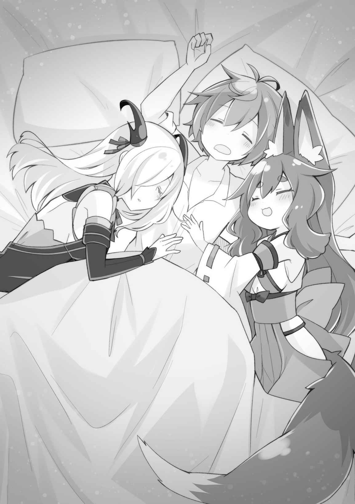
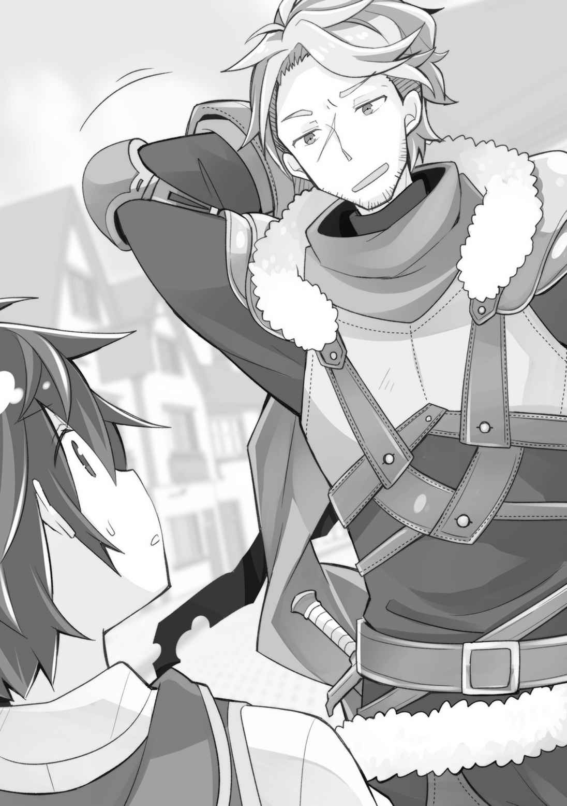
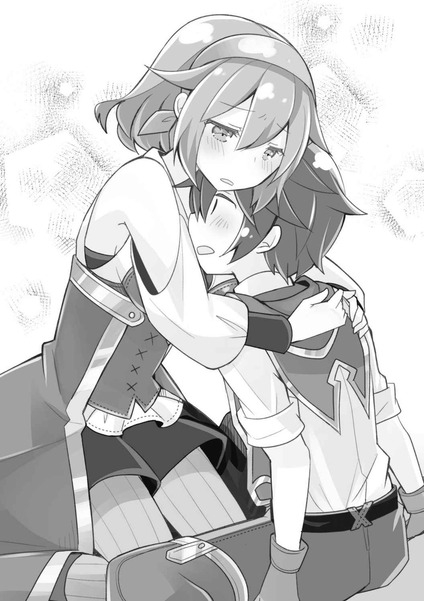

第二章
「すごいすごいすごーい！ きっもちいーね！」
「あばば、あばばばばば」
「あははっ！ お兄ちゃん、ゴレちゃんみたい！」
カエデによって仮初の命を与えられた木造の船は、今、大海原を解き放たれた矢のように疾駆している最中だ。
今この船がどれくらいの速度を出しているのか、さっぱりわからない。わからないが、船が出すようなスピードでないというのだけはわかる。
今までの航海が自転車でゆっくり走っているくらいだとすると、今のこれはスポーツバイクくらいだろうか。バイクに乗ったことはないが。
「ちょ……、カエデ、もうすこし控えめにさせて」
「えー？ なんで？ 早く着いたほうがいいよ！ 私の能力って時間制限あるし！」
よほど楽しいようで、カエデにスピードを緩める気は一切ない。
というか、カエデが命を与えていなければ、水の抵抗力と衝撃でとうの昔に船体がバラバラになっていただろう。しょせん、俺が適当な知識で拵えた木造船に過ぎないのだから。
今、俺たちが乗っている船は、カエデの能力を十全に活かせるように改修を施してある。
鋼鉄製の大型スクリュープロペラに、高速航行時の水の抵抗を大幅に減らし安定度も高める水中翼を取り付けたのだ。
（っても、ほんとうに取り付けただけのハリボテなんだがなぁ……）
どちらも、適当にくっつけてカエデに効果を説明しただけである。
スクリュープロペラに至っては、本当に固定してあるだけだ。動力がないどころか、壊れないように完全固定してあるから、本来なら回すことすら不可能な代物。
（それが、これだよ。ガン〇ムのハリボテ作ったらモビ○スーツとして完全に機能するってことだろ……。強力すぎる……）
神殿が躍起になってアラミラの祝福者を隠滅しようとする理由もわかるというものだ。
「お兄ちゃん、キツかったら村で休んでてもいいんだよ？ レンちゃんもアビスちゃんもいるから大丈夫だし」
「そうさせてもらうかな……」
俺はレンとアビスにカエデを任せて、少し開拓村で休むことにした。『村の出口』の杭をアビスに渡しておけば、ワープでいつでも船に戻ってくることができる。
海のど真ん中を航海中でも陸の上で休めてしまう。俺の能力も十分ヤバいものだった。
俺が村に入ると、すぐにエネルが出てきた。
「見てたよ～。あれ、カイの前世の高速船と同じくらい出てるんじゃない？ 時速でいうと八十キロくらい出てるんじゃないかな」
「かもしれない。てか、ちょっと水面から浮くから揺れが凄いんだよ……、なんでカエデは平気なんだ……」
「産みの親だからね……母は強しって言うし……」
「この場合、関係あるか、それ……」
意外と体力の問題かもしれない。船酔いというより、断続的に揺れるのが疲れるのだ。サンタマリア号は存外に飛ばし屋で、乗客のことをいまいち斟酌してくれない。親であるカエデが気にしてないからかもしれない。
「あー、それにしても開拓村は本当に休まるわ。もうずっとここにいたいわ」
草むらでゴロリと横になる。揺れないって本当に素晴らしい。
「カイ、ずっといるのはダメ。私が追い出すよ」
腰に手を当てたエネルに、いつもより少し強い口調で叱られてしまった。
開拓村のレベルが上がっても、開拓村に一日のうちにいられる時間の上限は、あまり伸びていない。いつも安全マージンを残しているので、限界までいることは少ないが、今で十二時間と少しくらいだろう。
これがもし、一日二十四時間の滞在が可能になってしまったら、俺は現実世界に帰る必要がなくなってしまうかもしれない。
「……わかってるよ。でも、どうしても疲れちゃって逃げ込むことはあるかも」
「その時はその時だね！ 私とコロモが全身全霊で慰めてあげるから、きっと大丈夫！」
「はは、頼もしいな」
今はいろいろ上手くいっている。
だけど、俺たちは存在を許されない集団かもしれない。一つ間違えば、どんな悲惨な結末が待っているとも限らない。そんな予感めいたものは確かにあって、だからこそ、そうならないように努力しているのだった。
「さ、今のうちになにか食べちゃいなよ。レンとカエデちゃんも呼んでくる？」
「いや、もう少し休んでからにするよ。胃がでんぐり返ってるから。お茶なら貰う」
今は、とても食べられる状態じゃない。
「お茶だね。じゃあコロモに淹れさせるよ」
「自分でやるわけじゃないんだ……」
さすがエネル。姉妹のパワーバランスが如実にわかる発言だ。
その後、お茶を飲んでしばらく休んでから俺は船に戻った。
船ではカエデが変わらないハイテンションで、高速航行を楽しんでいた。
……今度、カエデ用にバイクや車のハリボテでも作ってやることにしよう。
島を出発してから四日。
昼は超高速航行で移動し、カエデの能力が切れてからは戦士君による手漕ぎ航行に切り替え、予定していた何倍もの速度で目的の陸地まで到着した。
前回は街がある場所からけっこう離れた場所に上陸したが、今回は街の場所がわかっているので、人に見つからないギリギリを狙って上陸した。
「しっかし、滅茶苦茶早く着いたな。たった四日だぞ」
前回の半分もかかっていない計算だ。
「お兄ちゃんの村で夜に寝れるから、あんまり疲れなかったね」
「そうだな。……いや、お兄ちゃんはそこそこ疲れてるけどね……」
「そうなの？ 私は楽しかった！」
屈託のない笑顔を浮かべるカエデ。
船も楽しかったのだろうが、久しぶりの外出、さらに自分の家を探しに行く旅だというのも、心を軽くさせている要因なのだろう。
「じゃあ、さっそく街に入るんだが……前回、あの街では騒ぎを起こしてるから、少し慎重にいこう。アビスはお留守番かな」
「……がーん」
ほとんど表情を変えずにショックを示すアビスだったが、こればっかりは仕方がない。
アビスは見た目が「神殿が禁忌とする悪魔の姿」だし、前回の騒ぎの時に姿を見られていた可能性を捨てきれないからだ。その点、レンは前回来た時には島でお留守番だったし、俺も仮面を付けていたから大丈夫だろう。
商館の傭兵団員には顔を覚えられている可能性があるが、それほど気にする必要はないだろう。最悪、しらばっくれればいいのだ。
「いつでも逃げられるように、ここに杭を刺しておくから、アビスに番を頼みたいんだ」
「……だいじな役目？」
「大事だよ。逃走先が安全に確保されていれば、街での活動がやりやすくなる」
「……じゃあそれでもいい」
というわけで、街に入るのは俺とレンの二人。
カエデも付いて来たがったが、無事に到着した報告も兼ねて、『島の出口（北）』を使い、島に戻した。何があるかわからないので、万全を期す必要があるのだ。
さて、この街での予定は──
まず品物を売って金を手に入れる。その金で品物を買えるだけ買う。情報収集をする。カエデの故郷である、ゴディエの街の場所をゲット。奴隷商館に行き、サラの首輪のパスワードを聞き出す。街を出る。……という流れだ。
カエデの故郷を探す過程で、もっと大きな港町を見つけられれば、もうこの街に来ることはなくなる。俺としても、一度騒ぎを起こした街には何度も来たくはない。
お尋ね者ではないが、それに近い身の上だ。なるべく目立たないほうがいい。
俺は開拓村から、街で売るための商品を取り出し、前に来た時に使ったのと同じ荷車に乗せた。神殿から奪った豪華な荷馬車もあるが、さすがにそれは使わない。
今回売るものは、前回評判が良かった水牛を五頭。羊も五頭。村でもやっと完成品が出せるようになった隕鉄素材の包丁を三十本。羊毛糸三十玉。壺や茶碗などの生活雑器。小麦を十袋。ミカンをたくさん。
市場に売るのだから、同じもの……例えば小麦だけを大量に売るという手もあるが、一つのものをたくさん売ると足元を見られるような気がするので、たくさんのものを少しずつ売る。そうすれば市場調査にもなる。
特に包丁や陶器がどれくらいで売れるかは知っておきたい。
「さて行くか。レン、動物たちの誘導を頼むぞ。全部で十頭は出しすぎたか？」
「言いませんでしたっけ？ わたくしちゃん、動物と喋れますから、大丈夫ですよ」
「そういや言ってたっけ」
動物言語とはいったい……。
いや、そもそも開拓村から生きている動物が出てくるという時点で、すでに意味がわからない事態かもしれない。物が出てくるのはなんとなく理解できるが……。開拓村がどこかに実在するというのなら、移動してきているだけなのだから、理解できるのだが。
いや……そもそも動物って喋るんだっけ？ 喋るって言ってるのだから、喋るのか。
「まあいいや。じゃあ、アビス留守番頼んだぞ」
「……マスタ、気を付けてね」
このあたりはまだ人気がない荒野が続いているエリアだ。アビスには、適当に人が来ることがなさそうな場所に杭を立てて待っているように頼んだ。いつ人が通りかかるかもわからないので、角や髪を隠せるように、フード付きの服を渡すのも忘れない。
スコルパの街には、ここから海岸沿いに半日も歩けばたどり着く。船は開拓村に収納した。帰りには使わないが、もっと改良して次は揺れない船にしたいところだ。
走ったり歩いたりしながら一時間、俺たちは港町スコルパに到着した。
「さて……あんまり変わってないみたいだな。行くか。耳と尻尾、気を付けろよ、レン」
「はーい。ちょっと頭とお尻が出っ張った人になってるけど大丈夫！」
スコルパは前回に来た時とほとんど変わりがなかった。
一年しか経っていないのだから当然かもしれないが、俺としてはものすごく久しぶりに訪れたような感覚だ。それなりに濃い毎日を送っているからだろうか。
一年前に大規模な奴隷泥棒が出たというのに、相変わらず街に入る際に検問らしきものは存在しないようだ。だが、いくらなんでもザル過ぎるんじゃなかろうか。泥棒本人である俺が言うのも変だけど。
往来には人々が行き交い港町特有の賑わいがある。
これなら商品を売るにも問題がないだろう。
「さて、さっそく市場に行くか」
「はーい！」
レンが元気に返事をして、市場へと移動。
俺たちと同じように大量の荷物を引いた行商人スタイルの人間も多いため、特別目立つ心配はなさそうだ。中にはヤギを二十頭近く連れているような人もいるのだ。
この街の市場は一般にも開かれていて、場所代を払えば一般同士で商品を売買することができる。いわゆる自由市場というやつである。
今回用意したほどの数となると全部を売るのは難しいかもしれないが、ほとんどが商人同士の売買だから大口の取引となる可能性が高く、そうなれば逆に一瞬で捌けることもある。商人は商品を大量に安く買い、よその街に持っていき高く売るのだから。
ちなみに、前回水牛を売った時は、俺に売れ俺に売れと何人も来てしまい、結局、即席の競売がスタートしてしまったほどだ。今回どうなるかはわからないが、前回の競売最終価格を最初から付ければスマートな売買になるかもしれない。
「すごい混んでますね。マイロード、突然知らない人に刺されたりしないでくださいよ？」
怖っ！ レンったらいきなり何を言い出すんだ。
「そんなことになったら荷物捨ててすぐ島に戻って僧侶ちゃんの治療受けるわ。っていうか、物騒なこと言うなよ」
「いやぁ、けっこう危ないと思うんですよね。護衛としてはアビちゃんのほうが向いてるというか。わたくしちゃんは、どちらかというと戦闘員ですから」
「まあ、確かにアビスはいつもピッタリくっついてるから、ＳＰみたいな存在かも……」
どっちも戦闘力は高いが、より護衛に向いてるのはアビスのほう……というのが言いたかったらしい。というか、護衛なら忍者君を荷物の中に忍び込ませておくという手もあったななどと、今更思い出したりして。
そんな話をしながら、市場で場所を借りて、商品を売り出した。
こういった市場では、すぐに物が売れるわけではない。商人たちもいろいろな商品を見比べて、儲けられそうな商品を買っていくのだ。
価格交渉も入るから、一筋縄ではいかない。今だって──
「え？ そんなにするんですか？ つがいでもない牛でしょう？」
「じゃあ買わなくていいです。次の方～」
「おっと、そんなに結論を急がんでくださいよ。ただ、つがいでないなら労働力にするか、バラすしかないのに、その値段ではと言いたいだけでして」
「はい、次の方どうぞ～」
一筋縄ではいかないが、前回売った価格があるから、全部突っぱねることができる。アビスを待たせているのに、交渉を長引かせている時間的余裕はない。
なんでもスピーディに事が済んでいた前世の経験があるからか、交渉なのかクレーマーなのかの判断もいまいち難しいというのもある。
目の前の若い商人も、水牛が欲しいくせにどうしても値切りたいらしく、こうして二十分近く粘っているのだ。いい加減帰ってくれないかな、この人。
「おう、兄さん。俺はあんたの言い値でいいぜ」
近くにいた筋骨逞しいお兄さんが突然割り込んできた。俺としては話が早くて助かる。
「ちょっと！ 僕が先に交渉していたんですよ！」
若い商人と逞しいお兄さんが揉め始める。だが、しばらくして話がまとまったらしく、お互いの言い値の中央値で一頭ずつ買うということに決まった。
（こいつら、もともとコンビなんじゃないのか？）
チラリと脳裏に過ったが、時間を取られるのが嫌だったので、そのまま売ることにした。
「良かったんですか？ あれ、グルですよ、たぶん」
「いいんだよ。元々少し高めの値段設定だしな。てか時間の無駄だ」
だいたい俺がガキだからナメられるのだ。商売の前に強面のおっさんなんかを雇ったほうが話が早かったに違いない。
その後も紆余曲折あったが、商品は無事にすべて完売できた。金額的にはかなりのものになったが、相場という意味では、おそらくかなり買い叩かれていると思う。時間を短縮するため、長々とした交渉をしないからだが、どうせ能力で出したもので元手はタダだ。それよりも今は時間のほうが遥かに大事である。
「よし、まあまあいいぺースだ。次は必要なものを買い付けなきゃな」
「これだけあれば、けっこう買えるんですか？」
金貨やら銀貨やらがたんまり入った革の袋を持ち上げてレンが言う。
「例えば、市場で同じ物を売買するなら、交渉次第で『買値』と『売値』が同価格になったりするんだよ。てことは、今日俺たちが売ったのと同じような量のものが、その金で買えるってこと」
「はえぇー。そういうもんですか」
前回行った街では結局買い物ができなかったから、レンにとっては初めての買い物ということになる。島でもまだ貨幣の流通はないから、不思議に感じるのかもしれない。
さて、買い物だが、こちらのほうが時間を食いそうだ。なぜなら交渉しないで高いものを買おうとすると、だいたいみんな吹っ掛けてくるからだ。相場はあれど定価は存在しない。そういう点では、前回行った街の市場のほうがシステム的に優れていたと思う。
「安いもんならいいんだけどなぁ。今回は馬を二頭買いたいんだが、どうだろな」
「馬は高そうですし、水牛と交換とかにしたほうがいいかもしれません」
「確かにそうだな……。どこかで水牛出してくるか……」
街中だと、どこに人目があるかわからないが、今は『テレビ』の能力があるから、レンに現場に残ってもらい、合図を出してもらってから出るなどの合わせ技が使えるので、前に来た時よりは安全だ。
そうしてこっそりと出した水牛（オスとメスのペア）との交換で、オス馬を二頭手に入れることができた。この馬は旅が終わったら元々いるメス二頭と共に開拓村に入れて、村での繁殖を目指すのだが、それまでは、カエデの実家があるというゴディエの街までの移動手段として活用する予定である。
「あと何を買うんでしたっけ？」
「村にないものはかたっぱしから買っていくよ」
島にも足りないものはあるが、開拓村のほうもちゃんと成長させていかなければならない。基本的に、開拓村の発展と島の発展は比例関係にあるような気がするからだ。開拓村は今のレベル程度で収まってもらっては困る。
「あと、同時にカエデの故郷の街の場所も聞き込みしていくぞ」
市場なら行商人も多いし、元々の帝国領から遥々やってきたような人もいるだろう。ゴディエ出身の者だっているかもしれない。
カエデと二人で市場を隅から隅まで見て回る。
商人は地元の者が多く商品もさほど多様ではなかったが、「綿花」と「ガラス」は手に入れることができた。ガラスは素材の石から手に入れられれば一番良かったのだが、開拓村に入れておけば村で生産が始まらなくても「開拓村がある世界」に、その物が認知される。そうすれば、開拓村に訪れる行商人などを経由して、いずれ村に出回るようになるのだ。
さすがに、開拓村がすべての新素材の生産ができる村とするのは無理がある。理想を言えば、ガラスだって生産してほしいけども。
綿花に関しては、種付きのコットンボールの状態で売られているものを、麻袋一杯購入した。これだけあれば、余裕で開拓村で作付けができるだろう。
被服材料は毛皮と羊毛と麻のコンビネーションで乗り切ってきたが、ついに繊維の王様「綿」が流通するようになるのだ。綿があれば、ワタの布団も作れるし、服に関して困ることはほとんどなくなるだろう。あとコロモも喜ぶに違いない。
さらに今回もブドウと樽を購入して開拓村に入れた。ワイン作りが始まるようにと、ワインも買い、村に入れておく。ワインの作り方は、潰したブドウを発酵させるだけという単純なものだ。厳密には、美味しく作るにはいろいろな試行錯誤が必要だろうが、そこは開拓村の得意分野である。すぐには無理でも、時間が美味しいワインを作り出してくれることだろう。……俺にはワインの味はわからないけど。
さらに市場を歩き回ると、いろいろなものを手に入れることができた。ただ、お米だけはやっぱり見つからなかった。俺の故郷であるラベルダにはあったので、この世界に存在しないというわけではないはずだが、この辺では作られていないのだろう。
武器は弓矢は買うことができたが、クロスボウのようなものは見つからなかった。それは、自力で作るしかなさそうだ。望遠鏡も探したが、これもなし。もっと高級品を売るような店で扱っているのかもしれない。そもそも、存在しない可能性もあるが。
買い物以外にも、収穫があった。ついにカエデの実家があるゴディエの街の場所を、行商人から聞き出すことに成功したのだ。
わざと簡易的に描いた地図に、ゴディエも含めた知っている街の場所も記してもらい（もちろん情報料としてお金を払った）、だいたいの距離も教えてもらうことができた。
「遠いし、思った以上に内陸部だな。帝国広すぎる」
「うーん、この場所だとまず、北上してこの街あたりまで行く感じですか」
現在地であるスコルパより遥か北にある港町を指差しレンが言う。
「俺たちの場合、ここからまっすぐゴディエを目指してもいいんだが、獣道や人の入ってない山なんかを越えてくのは、さすがに難しいだろうからな」
開拓村のワープ能力があれば、レンとアビスに先行してもらい、俺はワープで合流というのを繰り返すという手がとれる。実際、それが一番早いのは間違いないだろうが、どんなアクシデントがあるかわからない。
「世情を知る機会にもなる。今回はおとなしく街道を通っていこう」
地図の印の位置が微妙に間違っていて、方角的に正しくても全く違うところに辿り着いてしまう可能性もあるだろう。その点、街から街への移動なら迷うことはないはずだ。
「ま、とりあえず今日の予定はここまでにして、アビスを呼んできて一泊しよう。さすがに疲れたよ」
「杭も回収してきますか？」
「杭は、忍者君に護っててもらう」
忍者君なら、もし人が通りかかっても見つかることはない。周囲の環境に完全に溶け込むことができるからだ。
俺は、開拓村から忍者君を連れだしてレンに預けた。残りの杭は一本しかないから、この場合、ワープを使うことができない。行きには使えるが帰ってくるための杭がないからだ。だから、足の速いレンとアビスだけ動いてもらって時間を節約する。
レンにアビスを連れてきてもらい（往復で二十分もかからなかった）宿を借りた。
前回と同じ宿にしようかとも思ったが、俺自身がお尋ね者になっている可能性も考え、別の通りにある宿を選ぶことにした。また三名で一部屋である。
「やっと、落ち着いたな。毎度、こうして宿の部屋に入るとホッとするよ」
「カエちゃんの船で真っ青な顔してましたもんね」
「……マスタ、ゆっくり休んだほうがいい。慣れない旅で疲れてる。はい、おふとん」
強引に腕を引っ張られベッドに寝かされてしまう。
「さすがにまだ寝ないって」
「……えー。最近あんまりマスタいっしょに寝てくれなかったから、楽しみにしてたのに」
それぞれ自室ができたこともあり、最近は一人で寝ることも多かったけど、アビスは寂しかったのかもしれない。
「じゃあ、今日はいっしょに寝るかー」
ベッドは二つあるが、大き目のベッドだし問題ないだろう。
まあ、お子様状態のアビスといっしょに寝たからといってどうってこともないし。
「……その前に。……んっ」
アビスが瞳を閉じて魔力集中、一瞬でグラマラスな女性の姿へと変貌を遂げる。
「待て、なぜわざわざ大人の姿になった？」
「……そのほうがマスタ、嬉しいでしょ？」
そう囁いて、流れるような動作で俺の横に寝転がる。
互いの呼吸の音が聞こえるような距離。
「じゃあ、わたくしちゃんは逆隣に寝ますね～。仲間外れは嫌ですし」
「マジかよ」
結局なし崩し的に、三人で眠ることになってしまったが、アビスはともかく、レンは俺の娘みたいなものだ。変な気を起こすことはないが、狭いベッドに三人で寝れば、いやでも密着度は上がってしまう。
「カエちゃんも、わたくしちゃんと寝ると安心するって言ってくれるんですよ～。尻尾がフカフカだからって」
レンの長く毛量たっぷりな尻尾がわさわさとお腹をくすぐる。確かに気持ちがいいモフモフ具合だ。カエデがレンといっしょに寝たがるのもわかるような気がする。
「……マスタ、私もほら。あったかいよ」
「ちょっ、アビス」
レンに対抗心を燃やしたのか、体を擦りつけるように抱き着いてくるアビス。

アビスは俺が極端な寒がりだと思ってるらしく、やたらと寒くないかと心配してくる。島に来てすぐのころ、俺が風邪を引いて死にかけた時、近くまで様子を見に来たアビスを抱きしめて暖をとったことが実質的な出会いだったのだから仕方がないのかもしれない。
……それに、寒がりだというのも、あながち間違いでもない。
「じゃあ、もう寝ちゃいましょー。おやすみなさい、マイロード」
「……おやすみ、マスタ」
「あっはい」
さっさと灯りを消してしまうレン。確かに、夜はもうやることもやれることも少なくなるから、寝てしまえばいいのだけど。
彼女たちの無邪気さに若干の恨めしさを感じつつも、瞳を閉じる。
なんだかんだ、疲れていたのと、アビスとレンの温かさに包まれて、すぐに眠りに落ちる俺なのだった。
◇◆◆◆◇
次の日。日の出と共に目を覚ました俺たちは、すぐに行動を開始した。
宿を引き払い、人気のない場所で俺だけ開拓村へ移動。
アビスとレンは忍者君がいる杭の場所へ二人で先に行っておいてもらう。
「お、カイ！ ちょうどいいところに来たね。ちょっと今いい？」
そのまま村を通り抜けて北の出口を目指そうと思っていたのだが、家から出てきたエネルに話しかけられた。
「なんかあった？」
「ありましたありました。ありましたとも。おめでとう！ レヴェルアーップです！」
「おお！」
昨日、綿やらブドウやらワインやら、いろいろ入れたのが良かったらしく、レベルが二つも上がったとのこと。特に綿を入れたのが大きかったらしい。
「新しい能力が追加されたよ！」
「え、もう？ どういうの？ どういうの？」
なんだかんだ言って、開拓村の能力は有用なものが多い。できれば『村の出口（西）』が解放されてくれると嬉しいのだけど。
「『外遊』だって！ 前にカイが言ってたやつだよ。村人を勉強のために外に出す能力だ！」
「マジでか！ このタイミングで！」
「村でも将来有望な若者が選出されるみたいだよ。人数は、一人だけだけど、これは村が大きくなるにつれて増やせるっぽいね」
なんにせよ、外で学べるというのは大きい。
「これ、村人置いてきちゃっていいってこと？ その……よその街に？」
「そうじゃない？ うまく街に溶け込むってことでしょう」
「大丈夫？ いきなり魔法とか使っちゃって魔法使いとして登用されちゃったりしない？ 怪しいやつだって捕まったりとかは？ 殺されたりしたらどうなるの？ あ、恋人ができたりなんて可能性もあるのか？」
「質問多いな！」
エネルによると、あくまで普通の人間として現地に溶け込み、必要な技術や知識を習得して数週間で自分で帰ってくるのだという。回収しないでも帰ってくるというのが意味不明だが、そういう能力だというのだから、そうなのだろう。
「じゃあ、とりあえずお試しで今いる街に解き放ってみるよ。実際の街と開拓村とじゃあ、細かい部分まで入れれば、ものすごく文明に差があるからな。学ぶところも多いだろう」
「だろうね。開拓村はまだ舗装された道すらない田舎だからねー」
とにかく、後で村人は『外遊』に出すと決め、俺は外に出ることにした。
「あー。カイ！ もう一個ある！ 例の『スペシャルショッピング』の品が売り出されたよ！ 思ったよりファンキーな逸品だよ、これ。……結構高いけど」
また呼び止められたが、能力発現後なかなかアイテムが売りに出なかった「スペシャルショッピング」の品となれば、見ておかねばなるまい。
「なになに、今あるの？」
「よしよし、食いついたな。ここに用意してございますわよ」
「ん、おっ！ 剣じゃん！」
エネルが懐からヌッと取り出したのは、一振りの剣だった。
ナイフよりは大きく、ロングソードというには短い。刃渡り四十センチくらい。ショートソードというやつだろうか。
「いいじゃん、いいじゃん。ついにこういう武器も作れるようになったんだな。ちょっと前までは、ナイフみたいなものだけだったけど」
「え？ これくらいの剣ならもう普通に打てるみたいだよ。これはそういうんじゃなくて、『特別製』だから」
意味深にニヤリと笑うエネル。なにそれ、怖い……。
「じゃじゃーん！ これだぁ！」
エネルが鞘から剣を抜き去ると、そこには黒鉄ではなく、黄金色に眩く輝く刀身が姿を見せた。ちょうど、真っ赤に燃え盛った薪の一番熱いところを剣にしたような──
「名付けて、ファイアーソード！」
「ダサいネーミングだな！」
わかるけど！ ってマジかよ、なにこれ、魔法の剣？ 魔法の剣なの？
「村で一番の鍛冶師がなんやかんややってたらできたみたいよ。熱を魔法で加えているのがミソなのかもしれないね。ちなみに、お値段のほうは金貨五枚となっております」
金貨五枚はかなりの金額だ。庶民なら一年ほどかけて稼ぐ額かもしれない。この世界では、生活に必要な金額と嗜好品との価格差が大きいので、一口では言えないが。
とはいえ、こんな魔法の品を買わないなんて選択肢はない。当然買う！
「はい、まいどありー。これ使用者の魔力で熱を発する仕様みたいだから、オンオフできるようだよ。しかも、本人には熱が伝わらない親切仕様だ」
「素晴らしい。てか、俺に魔力なんてあるのか？」
「あるある。カイがあると思ってればあるよ」
「なにその適当さ」
まあ、こっちの世界……開拓村での「魔力」と、向こうの「魔力」は違うものみたいだから、俺でも問題なく使えるだろう。なにせ、ここは俺の世界なのだから。
「さあ、ここで装備していくかい？ 武器は装備しなければ意味がないゾ」
どっかで聞いたようなセリフを言うエネルから、炎の剣を受け取る。普通に持っている分には確かに普通の鉄剣のようだが……。
「魔力ってどうやって込めるの」
「こう、『ぬぅーん、炎よ出でよ！』とか叫びながら、剣を高々と掲げるといいんじゃない？」
「ぜってーバカにしてるだろ……。ぬぅーん！ 炎よ！ 出でよぉおおお！」
「やったー！ さすがカイ！ ノリがいい！」
念じながら叫ぶと、確かに体から活力のようなものが剣に移っていく感覚があった。
そして剣を見ると、熱された鉄が真っ赤に輝き始めるではないか。
魔法というか電熱というか、人間相手にはエグすぎる凶器になるという確信が持てた。すごいアイテムだが使いどころが難しそうだ。硬いものを切るには良さそうだけど。
俺は、剣を鞘に入れて腰にぶら下げた。剣を持ち歩くのはハンターか傭兵くらいのものだが、いないわけではない。そう悪目立ちはしないだろう。護身用にもなるかもしれない。
「じゃあ、また新しいアイテムが出たら教えてくれ」
「はーい、いってらっしゃい！」
エネルと別れて、北の出口から村を出れば、そこはもう島の一角。
結界の大樹の根もとだ。
まだ日が昇ったばかりの早朝だが、すでに何人かの翼人が空に上がり、不審な船が来ていないかパトロールをしてくれているのが見えた。
俺は、なだらかな丘を駆け下りて、屋敷の調理場へと向かう。
「サラさん！」
「うわっ！ 驚かさないでくれ。心臓に悪い……って、カイ君か。ずいぶんと早いじゃないか。いつもはもっと遅くまで寝ているのに……」
旅先では早起きになるものさ……。昨晩がやたら早く寝たからってのもあるが。
「用事が一通り終わりまして、今日、例の奴隷商館に行くつもりだから、サラさんを呼びに来たんですよ」
「もう？ すまない、まだ支度をしていないどころか、ちょうど朝食を作り始めてしまったところなんだが……」
「あ、じゃあみんなで食べてからにしましょうか。どうせ、まだ商館なんか開いてないでしょうし。また客を装って中に入らなきゃですしね」
ということで、レンとアビスを呼びに戻り、また島まで移動。ワープ機能が強すぎて、旅の最中だということを忘れてしまいそうになるほどだ。
旅の進捗について皆に話しながら朝食をとり、村で手に入れたばかりの炎の剣を見せびらかしてから、アビスとレンとサラを連れてまたスコルパの街に戻った。
サラにもフード付きのローブを着せ、ついでに俺もフードを被ったら怪しい集団の出来上がりだ。サラは前回の奴隷逃亡の当事者だから、顔を覚えている者が街にいてもおかしくない。そうでなくてもサラは美人だから、普通にしていたら目立つだろう。
「変わらないな、この街は」
感慨深い瞳で、朝の喧噪に包まれる街を眺めるサラは、とても穏やかな顔をしている。
サラの国は戦争に敗れたのだ。本当は帝国領になっても変わらない賑わいを見せるこの街に、複雑な想いを抱いてもおかしくないと思うが、どうやらそういうことはないようだ。
ありがたいことに、サラは今の新しい生活を気に入ってくれているらしい。
というか、意外と前の生活がひどいものだったのだろうか。いや、一国の魔法使いだったのだし、そんなはずはない……と思うのだが、貴族としての振る舞いとかそういうのが厳しくあったのかもしれない。
しばらく歩いて、奴隷商館に到着した。
前回アビスが魔法で破壊した壁には木の板が打ち付けられ、簡単に修理されている。まだ、昼間だが、人の気配はない。その時は門番の傭兵が二人いたが、今日は誰もいないようだ。最悪、実力行使も考えていたので助かる。
「さて、アビスにレン。手筈はいいな？」
「……問題ない」
「わかってまーす」
実際、ほとんど難しいことはない。傭兵がいたら魔法で黙らせる。抵抗されたら魔法でビビらせる。それだけだ。
あとは祝福者がいる可能性だが、もしも祝福者がいたとしても、レンには祝福の能力は効かない。これは、レン自身が「祝福で生まれた存在」のためで、祝福の能力は別の神の能力と二重で掛けることができないからだ。盾の神の祝福のように、空間に能力を出現させるようなものは別のようだが──まあ、祝福者がいる可能性はほとんどないだろう。
あとは魔法使いだが、前回戦った傭兵団長がいた場合、戦闘は避けられないだろう。
「じゃあ、行こう」
俺は躊躇せずに入り口の扉を開けた。中は薄暗く、人気がない。
「すみませーん！ 誰かいますかー！」
返事はない。
「……変だな、休みかな。奴隷商館って休みあるの？」
休日は奴隷も休日で、庭で遊んでたりするのだろうか。想像がつかないが……。
「いや、休みなどないだろう。お忍びで身分の高い者も来るのだろうし」
「ですよね、なんだこれ。廃業……？」
その可能性は高かったが、諦められずしばらく呼びかけていると、若い女中が出てきた。
話を聞いてみると、廃業ではなく休業中ということらしい。
「店主のモリーニ氏に用事があったのですが……」
「わざわざご足労いただきましたのに申し訳ありませんが、主は今、仕入れのために外に出ておりまして……おそらく半年以上は戻らないのです」
「半年……。出たのはいつ頃ですか？ 今から追いかけても間に合いますでしょうか」
「どうでしょうか……出たのはもう二週間ほど前のことですし」
マジかよ。このタイミングで仕入れって……。仕入れ？
「あの……目的地はわかりますでしょうか。仕入れということですが」
「はい、なんでもラベルダ王国との戦争があるとかで、港町ノメルへ向かいました。奴隷は戦争で調達するものですから」
「なるほど」
なんでもペラペラ喋ってくれるが、特段秘密にするようなことでもないのか。
とにかく港町ノメル。ゴディエの街の場所を聞き込みしている時に、すでに知った名前だ。この街をずっと北に行けば辿り着く、帝国最大の港町である。もともと俺たちもそこを経由してゴディエへ向かうつもりだった。
二週間前に出たというから、追い付けるかどうかはかなり微妙だが、行くしかない。
「……しかし、店を閉めてまで仕入れに行くとは、そういうものなのですか？」
「いえ、なんでも私が入る前に、たくさんの奴隷に逃げられてしまったらしくって」
「そうでしたか」
つまり、あの時の赤字を補填できなかったということなのか。いや、潰れるほどの損害ではなかったのだから、そこまで痛手でもなかったと考えることもできる。いずれにせよ、商売が立ち行かなくなったということで間違いなさそうだ。
傭兵の姿も見えないし、奴らは雇いきれず解雇されたということだろう。
もしかすると、傭兵といっしょに戦争に参加するのかもしれない。奴隷商がどうやって戦地で奴隷を手に入れるのだろう。あの店主が自ら戦うのは想像しにくい。
俺は女中に銀貨を一枚握らせ、商館を出た。
「すみませんサラさん。ちょっと遅かったようです。まさか、こんなことになるとは……」
サラだって、内心ではやっと首輪が取れると期待していただろう。心を殺され奴隷になる危険な首輪をいつまでも着けているのがストレスでないはずがない。
「いや、カイ君。私は全然気にしていないよ。それより、いっしょに探しに行けることのほうが楽しみで仕方がないくらいだ。それに……私の首輪でのことなのだし、ずっと人任せにするのは心苦しいというのもあるんだ。私も連れて行ってくれるのだろう？」
「えっと──」
サラはまた島に戻っていてもらおうかと思っていたのだが、彼女もまた長い島での暮らしに閉塞感を覚えているのかもしれない。行きはカエデといっしょだったし、道のりは陸路の予定だ。サラなら馬も乗れるし、一応剣も扱える。問題はない。
「じゃあ、一緒に行きましょう。それなりに長い旅になりそうなので、それでも良ければ」
「ホントに？ 本当にいいのかい？」
「えっ？ ええ。もちろん」
「……ふふ、やった」
小さくガッツポーズを作るサラ。そんなに外に出たかったのか……。
「まあ、なんにせよ準備して街を出よう」
今、馬は四頭いる。もともといる神殿馬車を牽いていたのが二頭と、昨日買ったのが二頭だ。俺とアビスとレンとサラの四人。アビスは俺の後ろかレンの後ろに乗るからいいし、馬は三頭で足りる。もう一頭は荷物を載せてもいい。
エサや水は開拓村から出せばいいし、自分たちの食料もそう。というか、いちいち島に帰って食事をしてもいいくらいだ。時々、リーベルに来てもらって周辺の探索を頼むのもいいかもしれない。途中で珍しい植物なんかを見つけたら抜いて開拓村に入れてもいいし、木材なんかも珍しいのがあったら回収してもいい。その他の素材……土や石なんかでもそうだ。この世界にあるものすべてが、開拓村を成長させる素材になりえる。
（そう考えてみると、ちょっと楽しいかもしれない）
すでに島の素材はほぼすべて開拓村に導入済みだ。
せっかく外に出たのならば、外の素材も積極的に手に入れていくべきだろう。
──成長といえば。
この街を出る前に、開拓村の新能力『外遊』を試そうと思う。
俺が開拓村に入りエネルにその旨を伝えると、すぐ呼ぶと云って指をパチンと鳴らした。すると、どこからともなく旅支度を整えた小ざっぱりとした村の青年が現れて、俺に「よろしくお願いします」と頭を下げるではないか。
「ずいぶん、システマチックだな」
「まあ、そりゃそういう能力だからね」
エネルは、ゲーム的な能力と言いたいのだろう。まあ準備もできているのなら話は早い。
俺は青年と共に開拓村を出た。
「お、おおっ。これが村の外なのですね。私は村から出たことがありませんでしたので……。なんて凄い……！」
青年が街の風景に感嘆する。俺には「村の外」がどこの世界を形容した言葉なのか、判別が付かないが、確かにここも広義での「村の外」には違いない。全くの異世界だから、厳密には彼にとってここは夢の世界。あるいは、夢の世界の住人にとっての現実世界といったところだろうか。あまり深く考えると頭が痛くなりそうな話だ。
「感激しているところ悪いが、君の仕事はこの街でいろいろなことを見聞きして、村に持ち帰ることだ。できそうか？」
「はいっ！ このような貴重な機会を与えてくださり、ありがとうございます！」
言葉もこっちの言葉だし、大丈夫そうだな。あっ、そうだ。
「これ、支度金として使ってくれ」
「えっ、いいんですか？」
「文無しじゃあ、つらいだろう」
青年に銀貨と銅貨がじゃらじゃら入った小銭用の革袋をそのまま手渡す。
金貨は入っていないが、街に溶け込むには十分な金だろう。
「ありがとうございます！ 精一杯勉強してきます」
そう言って、青年は雑踏の中に消えていった。頑張って、いろいろな技術を習得して来いよ。俺は心の中でエールを送った。
青年を送り出し、いよいよ今度は自分たちが街を出る番だった。
だが、まだ少し準備をしなければ出発はできない。買ったばかりの馬に馬具も用意しなければ長旅は無理である。買いたいものもある。
馬を預け、俺たちは食事をとることにした。サラが地元の料理が食べたいということで、小さな食堂へ行き、それなりの量を注文。屋内だから、俺とサラは外套のフードを外して食事を楽しんでいたところで、事件は起きた。
「おおおっ？ どこかで見たツラだと思ったら、お前、あの時の小僧じゃねぇか？」
唐突に、店の外から男がズカズカと入ってくるなりそう叫んだのだ。
「やっぱりそうだ！ 俺はこう見えて記憶力がいいんだよ。あの時のモンディアルの魔法師の女もいるじゃねぇか」
逆光でわかりにくかったが、奴隷商館で雇われていた傭兵の隊長を務めていた男だった。用事をほとんど終えて気が緩んでいたというのもあるだろうが、運が悪い。よりによって、この男に見つかるとは。傭兵たちはすべてモリーニと共に出ていると思いこんでいた。
アビスが素早く立ち上がり、俺を護るように前に立つ。
「はっはは、そんなに警戒すんなよ。俺はもう誰にも雇われてもいねぇし、もうそっちの怖い姉さんと戦うつもりもねぇぜ」
笑ってそんなことを言う傭兵団長。
筋骨隆々の逞しい男だが、存外に人懐っこい笑顔でいやに馴れ馴れしい。
「じゃあ何の用だ？」
「そう怖い顔するなよ。知った顔だったんで、つい……な。声をかけさせてもらったってだけさ。貴族じゃねぇ魔法師は少なくてな」
なるほど。確かに、魔法使い同士の話なんかをしたくても、フリーの魔法使いと出会う機会はかなり限られるのだろう。
「しかし、あんたたちも豪胆だな。この街じゃお尋ね者だろう？」
そうじゃないかとは思ったが、やはりそうだったか。まあ、あれだけの奴隷をかっさらっていったのだから、当然といえば当然だろうけど。
「ちょっと用事があってね。通報するか？」
俺はちょっと強気に答えた。通報するというならしてもらっても構わない。もう用事は済んだし、街の外に出口の杭も立ててある。
「んな一文にもならんことはしねぇよ。この街の奴らに、そっちの姉さんを捕まえられるとも思えねぇしな」
「じゃあ、本当になんとなく話しかけてきただけなのか？」
「ん、まあ……それだけじゃねぇけどな……」
男は、考えるように口をつぐみ、俺、アビス、サラ、レンの順番に視線を走らせた。アビスとレンは、しっかりフードを付けているし、アビスは角に、レンは耳に引っかかるようにできているので、よほど強い力が加わらない限り、フードが外れることがない設計だ。コロモ作だから、パッと見て違和感を感じることもない。
まあ、アビスはともかくレンの姿は見られても獣人で通るだろうが。
男は真面目な顔をして黙り込んでいる。

「どうしたんだ？」
「……なあ兄さん、いきなりこんなこと言われても驚くだろうが……俺を雇ってくれねぇか？ そこの姉さんほどの魔法師を従えてるぐれぇだ、金はあるんだろう？ それに、あのわけのわからん能力……。祝福者なんだろうが、神殿の人間にゃあ見えねぇし、訳ありと見た。魔法師は足りてるのかもしれねぇが、俺は役に立つぜ？ どうだ？」
ん？ 今、雇えって言ったのか？
というか、この男には俺の能力を一度見せている。開拓村に引きずり込んでボコって倒したのだ。あれから一年、さすがにあの時の傷は癒えたようだが、なにかの罠か？
「レン」
「あー、これ本気っぽいですね」
レンは人の嘘を見抜ける（絶対ではないだろうが）特技がある。たぶんキツネ娘だから、野生の本能的ななにかでわかるのだろうが、実に有用だ。
「だが、俺はあんたをあれだけボコボコにしたんだぞ？ 罠かなにかじゃないのか？」
こんなことストレートに聞くのもどうかと思うが、言葉に嘘があれば、レンが嗅ぎ分けてくれるだろう。
「ははっ、それを言ったら、俺はそっちのモンディアルの魔法師に殺されても仕方がねぇってことになるぜ。仕事でのことだ、だからそっちも大目に見ろとは言わねぇが、痛み分けってことにしてくれねぇかな」
それは大目に見ろということなのでは……？ とも思うが、しかし俺自身はこの男に個人的な恨みがあるわけではない。
「サラさんはどう思います？」
「傭兵のすることに、いちいち腹を立てるほど分別がないわけじゃないよ」
「そうなんですか？」
「ああ。それに、あの戦でこの男が介入するころには、もう戦いはほとんど終わっていた。私たちは奴隷として捕らえられて結果的に助かったような面もあったしな……。運命の不思議というやつだ」
確かに、落ち武者として殺されるよりは結果的にマシではあったのだろうが、なかなか前向きな発言だ。なんだかんだ、島でそれなりの暮らしができていることで、心の整理が付いたという事なのかもしれないが。
「はっはっは、おかげでおやっさんは大損こいたみてぇだがな。俺も解雇されちまったし」
「他の傭兵たちはどうしたんだ？ お前の部下じゃないのか」
「ああ、あいつらはおやっさんと戦争に参加するんだとよ。俺は魔法師だし、戦に出るとなると立場ができちまうから、パスさせてもらってブラブラしてたのよ。……それに帝国の軍部とはちょっとあってな」
「軍部とちょっとって？」
「そりゃ、あんた、あれだよ」
男は言いたくなさそうに、頭をがしがしと掻きながら言った。
「気付いてんだろ？ 俺は元々帝国の軍人だ。結局、性に合わなくって飛び出した口だからよ。知り合いがいると面倒臭そうでな」
うん、気付いてたよ気付いてた。
正直に言えば、あんまり考えてなかったけど、魔法使いって基本的に貴族なのだ。なら、こんなとこで傭兵やってる時点で、足抜けしてきた変わり者かサラのように戦争で滅んだ国の元貴族か、実質その二択だろう。
「まあ、俺のことはいい。雇ってくれるのか？ 俺は役に立つぜ」
「一つ聞きたい。帝国の街について詳しいか？」
「ん？ ああ、そりゃでけぇ街くれぇならな」
「ゴディエの場所は？」
「おお、懐かしい名前だ。しばらく住んでいたことがあるぜ。あそこには、軍の訓練所があったからな」
マジかよ。決まりだな。多少リスクはあるが、案内人はいれば確実だ。
「では、雇おう。名目はゴディエまでの案内と護衛だな」
「ゴディエまで？ あの街は、もう帝都でもねぇし、なんにもねぇとこだぞ？ まあ、別に理由は訊かねぇけどよ」
さすがにカエデのことは話す必要はないだろう。説明も難しい。
「そうしてくれると助かる。あと、雇うにあたって絶対に守ってもらうことが一つある。雇用主……つまり俺の秘密は絶対に厳守すること。守れるか？」
「傭兵ならそんなことは当然だ。誓えるぜ。なんなら神殿で誓約を交わしてもいい」
「よし、信じよう。それで賃金はどうする？」
「そっちの懐次第だが……そっちの姉さんはどれくれぇ貰ってんだ？ それと同じくらいもらえりゃ御の字だが」
「同じくらいでいいなら、こっちも助かるよ。よろしく頼む」
やったぜラッキー。アビスと同じだけでいいなんて太っ腹！
「お、おお？ なんだ？ そんな簡単に……」
「……私、お金貰ってないから」
しれっと答えるアビス。考えてみたらお小遣いくらいはあげたほうがいいのかもしれない。アビスに欲しいものがあるとも思えないけど。
「おおおおお？ あれだけの魔法を使える魔法師なのに金を貰ってない？ どういう関係だ？ 嫁か？」
ガターンと椅子から転げ落ちそうになるほど、オーバーなリアクションを取る男。この男にとって、魔法使いというのは高い金を取るものなのはある種の不文律なのだろう。
「……私はマスタのものだから」
また真顔で答えるアビス。実に誤解を与えそうな表現だ。
「ヒュー、お熱いね。ま、賃金のことは追々でも構わない。そういえば、自己紹介もまだだったな。俺は、ファウゼルだ」
「俺はカイ。こっちのがアビス。レン、それにサラだ。早速だがファウゼル、街を出るから準備をしてきてくれ。あんたの言う『おやっさん』を追っかけるぞ」
「どういうこった？ ゴディエに行くんじゃなかったのか？」
俺はファウゼルに事情を説明した。
なぜ俺がこの男を雇ったのかといえば、この目的のためという部分もある。俺たちだけで、奴隷商のモリーニを探すのは難しいだろうが、ファウゼルがいれば、部下経由なんかでも探しやすくなるに違いない。
なにより、土地勘があるというのが大きかった。
「そういうわけか。ずいぶん簡単に雇ってくれるとは思ったが、そういう用だったら、俺がいたほうが話が早いだろうな」
「いちおう聞くけど、ファウゼルは知らないか？ 呪文」
「知ってる……と言ってやりてぇとこだが、さすがにわからん」
まあ、そりゃそうだろう。雇用主が傭兵に大事な呪文を教えるとかありえない。
「まあ、とにかくそういう事情だから、いっしょに来てくれ。俺たちは帝国の地理に疎い」
「よし。大船に乗った気でいてくれ。バッチリ案内してやるさ」
そうして俺たちは、五人で奴隷商モリーニがいると思われる港町ノメルまで移動することになったのだった。
◇◆◆◆◇
ファウゼルはさすが男一匹というべきか、支度らしい支度をすごい速度で終わらせて戻ってきた。が、俺たちと比べるとかなりの荷物量だ。
いや、普通の旅支度とはこういうものなのだ。てのひら開拓村があるおかげで、大して荷物を持つ必要がない俺が異常なだけなのである。
とにかく出発しようということで、馬に荷物を括り付け、それぞれ馬に乗り出発した。
俺だけがアビスと二人乗りで、あとは一人で馬に乗っている。
街道を馬の小走りで軽快に進む。しばらく走った後、サラが目で合図をしてきたので、少し遅れて並走した。先行するファウゼルに聞こえないよう気を使いながら口を開く。
「カイ君。どうしてあんな簡単にあの男を雇うことにしたのだ？ 私たちには秘密にしたいことも多いから、こういう接点を持つのは嫌がるのではと思っていたのだが」
確かにサラの言う通りである。信用できるかわからない他者を内側に入れるのは危険だ。そのことは、俺自身も十分に承知しているところである。
「可能性という話なら危険は確かにあります。でも、あの男は比較的信用できるタイプとみていいでしょう」
「どうして？」
「一つは、魔法使いだからか、神殿や祝福者に畏敬の念を抱いていないこと。もう一つは、金で動かない人間だということ」
俺がそう答えると、サラは首を傾げた。
「傭兵だぞ？ 金で動いているんじゃないのか」
「金が欲しいだけなら、国に残っていても十分貰えていたでしょう。魔法使いはかなりの高給取りみたいですから。それを投げ捨てたってことは、金と地位とを引き換えにしてでも自由を欲する……そういうタイプなんじゃないでしょうか。なんだかんだ言って、賃金もどうでもよかったみたいですし」
あの後、ちゃんと賃金の交渉をして、結局一週間で銀貨十枚という地味なラインで話が付いた。魔法使いを雇う相場などはわからないが、決して高い金額ではない。
だが、ファウゼルは『そんだけもらえりゃ十分』と笑っていた。
「我々にとって危ないのは、正義感を拗らせた神殿の信者とか、金のためなら味方でも裏切る、そういう手合いですが、彼はそのどちらでもないでしょう。……まあ、それも絶対ではないわけですが、信用できそうなところは信用していかないと……。他所との交流を一切持たずに国の運営をしていけるとも思えませんし」
ファウゼルが本当の本当に信用できるかは、わからない。
わからないが、そんなものは誰が相手であろうと元々わからないものだ。それよりも、自分達が信じること。その、「まず自分が信じること」ができないのなら、俺たちは永遠にあの島に引きこもり、外にいるものはすべて敵だと断じて暮らしていくしかない。
俺はそれが嫌だった。
俺たちは、悪いことをしたわけではないし、世界の転覆を狙っているわけでもない。
ただ、生きているだけだ。
アラミラの祝福者も、滅ぼされた国の者も、翼人達も。
信じてもらうしかない。俺のことを、俺たちのことを。
そのためには、やはりこちらが信じることが出発点になるのだろう。
「……カイ君らしいよ。まあ、そのぶん私たちが気を付けることにしよう」
「それはぜひ頼みます。なにかあってからでは遅いですからね。自分としても、リスクのある行動だとは理解していますから。……すみません」
実際には、俺がアラミラの祝福者だとか、絶海の孤島で暮らしているとか、そういう情報を流さなければ、危険はほとんどないだろう。
「まあ、あとは世情に詳しい人間がいればいろいろ教えてもらえますからね。傭兵やってたんなら、よその地域のことも知っているでしょうし」
「確かに、元帝国の軍人なら地理には詳しいだろうな」
「なんにせよ、ちょっと本人と話してきますよ。いろいろ訊きたいこともありますし」
旅はまだ始まったばかりだ。
ファウゼルが、なぜ俺に雇われたがったのか、その理由を聞かなくてはならない。男同士、腹を割って話をしてみよう。
というか、俺は前世の記憶分、この世界での実年齢よりも精神年齢が高めだ。おそらく、感覚的にはあのファウゼルと同い年くらいだろう。
先導するファウゼルは、見たところ二十代後半といったところ。ツーブロックに刈り上げた髪と無精ヒゲがワイルドだ。それなりに修羅場をくぐっている男特有の凄みがあり、同じ男として少しあこがれる感じもなくもない。
俺は馬を前進させて、ファウゼルの隣に付いた。
「おう。来たな。なんか俺に聞きてぇことがあるんだろう？」
俺たちが後ろでなにか話していたのを気配で感じていたのかもしれない。
俺は、単刀直入に切り出した。
「あんたは……どうして俺に雇われようと思ったんだ？ 別にいくらでも仕事の口なんかあるだろう？ フリーの魔法使いなんて、ほとんどいないんだから」
そう訊ねると、ファウゼルは口元を少し緩めた。
「一口で言やぁ、兄さんが俺に勝ったからだよ。俺が負けたからと言い換えてもいいが」
勝ったから？ そういう発想はなかったな。
「俺は戦いで負けたことが一度しかなかったのよ。それもガキの頃の話でな。今なら、相手が魔法師だろうが祝福者だろうが絶対に負けねぇ……自分が一番強い。そう思い上がってたんだ。傭兵なんてやってたが、負けることなんか想像もしてなかったんだぜ？ それが完敗だよ。逆に驚いたぜ。世の中には、こんなやつらがいるのかってな」
「それが、俺に雇われたかった理由なのか？」
なんだかよくわからない話だ。完全に自分にはない発想である。俺だったら、どうするだろう。負けた相手にはなるべく近寄らないようにするだろうか。
「負けて……考えたのよ。あれは一体何者だったんだろうってな。俺が気付いた時には、もうあんた達は姿をくらませていたからな。……だが、考えてもわからなかった。だから、聞きたかったのさ。あんたたちが一体何者なのか」
「それを聞いてどうする？」
「別にどうもしねぇ。ただ……俺も連れていって欲しいってだけだ。これは、俺の勘だが、あんたに付いていけば俺の望む戦いがある。そんな気がするんだ」
望む戦いか。そういえば、アビスが戦った時も、投降を呼びかけたがこの男は応じなかったんだっけ。
「戦闘が好きなら、どうして軍を抜けたんだ？ 帝国の魔法使いならいくらでも戦いはあっただろう」
「知らねぇのか？ あの国は、魔法師同士の戦いはなるべくやらせねぇ方針なんだぜ。戦争ってのは、結局魔法師を先に消耗させられたほうが負ける。だから、魔法師を別の手段で倒すのが帝国のやり方なのさ」
「別の手段とは？」
「そりゃおめぇ、物量をぶつけたり、遠くから矢で射ったり様々よ」
「そんなの魔法使いと戦うなら、誰でも思いつくやりかたじゃないのか？ 他の国はどうしてるんだ？」
「やっぱりあんたは何かが違うな。魔法師を止めるのは魔法師の役目。これは、どの国の軍でも採用している不文律だ。だから相手もそのつもりで魔法師を繰り出してくる」
三国志のゲームで、武将が名乗りを上げて一騎打ちが始まるような感じだろうか。
なるほど、それを無視して射かけて殺してしまうのが帝国のやり方というわけか。相手からしたらズルい以外の何物でもないだろうが、勝てば官軍というやつだ。
「だが、ファウゼルは魔法使い同士の戦いがしたかった。それができないから軍を抜けた……そういうわけなのか？」
「大雑把に言えばそうだな。他にも理由はあるが……まあ、それはいいだろう」
要するに軍の火力としての人生よりも、戦士としての人生をとったということか。魔法使いは基本的に全部貴族だっていうし、戦士として生きるのは難しいのかもしれない。サラが屋敷で料理係を楽しんでいるのも、似たようなものなのかも。
「さあ、俺のことは話したぞ。お前さんのことも教えてくれ」
さて、どこまで話したものか……。
「そうだな……まず言っておくが、あんたの推察通り、俺……いや、俺たちは全員訳ありだ。神殿の関係者でもない。どちらかといえば、神殿には近づきたくない側だな」
「祝福者なのにか？ いや……辺境の出身なら儀式を受けられねぇこともあるのか……？ だが、能力を使っていただろう。どうやって神の名を知った？」
「ま、偶然な。で、祝福者は神殿に入らなければならないだろう？ 本当は。だが、俺もあんたと同じように神官なんかになりたくないんだよ。だから、神殿に知られると困る」
「そういうわけか。わかるぜ。神官なんて絶対に退屈そうだ」
うまく俺のことは納得させることを成功した。神官になりたくないってのは、子どもの頃から本当に思ってたことだから、嘘ではないし。
「そうか……それにしても、そっちの姉さんは、どうして縮んじまったんだ？」
ファウゼルが俺の後ろにちょこんと座っているアビスに視線をやって言う。
「……高度な魔法使いは、魔力を調節して体のサイズを変えることができる」
まさか、アビスが冗談を？
「そうなのか！ なんてこった……世の中にはまだまだ俺の知らねぇことが沢山あったんだなァ……」
アビスの言葉にうんうんと肯き納得してしまうファウゼル。
魔法、そこまで万能じゃないでしょ、この世界。どっちかといえば、祝福の能力のほうが、万能性ある気がするぞ（理屈がわからんのに現象が起こるという点で）。
魔法は、結局『魔力』を燃料にして、いろんな現象を起こす技であり、そこまで突飛なことはできない印象だ。まあ、単純に火力はものすごいが、神の奇跡ではありえない。
だから、魔法で体が縮むのも普通に考えればありえないことだが……まあ、本人が納得したならいいか。
「……ところで、今回の戦。帝国の相手は、ラベルダ王国で間違いないのか？」
俺は気になっていたことを訊いた。
すでにスコルパの街でもそれなりに噂になっており、港町ノメルで兵の募集と編成が行われているということは知っていた。
だが、それでも訊かずにはいられない。ラベルダ王国は俺の故郷なのだ。
「ああ、間違いねぇ。だが……帝国は内陸の国だ。海戦なんかやったことねぇはずなんだよ。ラベルダ王国は海の遥か向こうの国なんだぜ？」
「ラベルダの場所もわかるのか？」
「そりゃあ、元軍人だもの。主要国家の位置ぐれぇは知ってるよ」
「そうか……」
止められるものなら止めたい。だが、相手はおそらく恐ろしいほどの大規模戦闘集団だろう。魔法使いも何十人といるに違いない。一国を攻めるというのだから、当然だ。
今は、家族の無事を祈ることしかできない。
俺の気持ちだけで、島に住む全員の生活を脅かすことなどできるはずがない。俺が突っ走って俺だけが死ねば済むことではないのだ。もし、俺が死んだら、あの島に残ったみんなは遠からず全滅するだろう。全滅しなかったとしても、外に出ることもできず、細々とただ生きるためだけに生きることになる。絶対にそうなるのだ。
（歯がゆいな……）
俺は個人としては破格の力を有していると思う。
だが、裏返せばそれは所詮人が持つ力でしかないのだった。国という規模相手では、どうにもならない。
せめて、軍の編成が終わり船が出る前に、奴隷商モリーニを見つけなければ。
俺たちは、馬の歩みを速めたのだった。
◇◆◆◆◇
スコルパの街を出てから、十日。
俺たちは無事に港町ノメルに到着した。
開拓村から物を取り出すのはファウゼルには見られないように気を付けたが、おおむね問題ない旅路だったと思う。途中途中で見つけた、珍しい木材などは掘り出して回収することができた。
港町ノメルは、帝国一の港町と言われるだけあって、かなりの規模の街だった。
スコルパもそれなりに大きい街だと思ったが、ここはそれを遥かに凌駕する規模だ。
「なんとか間に合ったみてぇだな！ ま、軍の編成は時間がかかるもんだ。十分、時間的には余裕があると思ってはいたがな」
案内役のファウゼルが得意顔を見せるが、十分に仕事をしてくれたと思う。
彼とは道中いろいろな話をしたが、意外なほど常識的な感性を持つ男で、教養も高かった。傭兵のイメージと粗野な言葉遣いについ引きずられてしまったが、ドロップアウトする前は帝国貴族でエリート街道を走っていたのだから、当然といえば当然なのだった。
「さっそく、モリーニを見つけよう。……といっても、この人出じゃあな……」
ノメルの街は、人でごった返していた。
傭兵の受付と編成を行っているからだが、まあいるわいるわ。この世界に転生してから、初めて見るような人の数だ。なるほど、戦争は数なんだなとリアルに感じることができる。
「あんたたち、おやっさんのツラは覚えているのか？」
「いや……正直、うろ覚えだ」
「だろうな、しょうがねえ、俺が探しに行ってくる──」
「いや……ファウゼル、ちょっと待て」
探すといえば、探し物のプロがいるじゃないか。名前だけで人探しできる能力者が。
「モリーニのファーストネームはなんだったっけ？」
「おやっさんか？ アルフォンソだ。アルフォンソ・モリーニ」
「アルフォンソね。オーケー、ちょっとここで待っていてくれ。レンはいっしょに来い」
俺はレンと二人でその場を離れ、近くにあった適当な宿屋で部屋を借りた。
安い部屋は傭兵希望者で埋まっており、一番高い部屋しかなかったが、どうせ一泊はするつもりだったから問題ない。
「リーちゃん連れてくるんですか？」
「そうだ。空を飛んで探すのは無理だが、名前がわかってれば位置を掴めるはずだ」
ということで、開拓村を経由してリーベルを連れてきた。
いきなり連れてこられたリーベルはさすがに面食らっていたが、事情を説明したらすぐに落ち着きを取り戻した。
「じゃあ、その『アルフォンソ・モリーニ』って人を探せばいいんだね？」
「できそうか？」
「簡単だよー。まあ、空から探せばもっと簡単だけど、それは仕方ないね」
とはいえ、この宿は三階建ての最上階。広場の前という立地だ、探しやすいだろう。
「じゃあいくよ、『鵜の目、鷹の目、神様の目』！ ほい発見。ちょっと遠いけど、あそこ」
「早いな！」
リーベルが能力を発動し、あっさりとモリーニを見つけ出す。彼女がいなかったら、この数千人はいそうな中で見つけるのは、かなり手間取っただろう。
リーベルが指差す先に、見覚えのある傭兵たちと恰幅のいいオッサンが何事か話しているのが見えた。遠くてボンヤリとだが確かにあれは、あの奴隷商館の主だ。
「よし、ありがとう。リーベルはここで待っていてくれ」
そう言い残して部屋を出て、すぐに皆と合流し位置を特定できたことを告げた。
「はぁ？ んなアホなことあるかよ。どうやって──」
「理由はいいから、急ぐぞ。さっさと捕まえよう」
レンに先導させ、人込みを掻き分けて走る。すぐに、見たことがある顔の男のところに到着した。目的の人物、奴隷商モリーニだ。間違いない。
向こうは俺たちよりも、突然現れたファウゼルを見て驚いたようだった。
「ファウゼル！ どうしてここに？ やはり戦に参加することにしたのか？」
一方、ファウゼルのほうも本当にこんなにすぐ見つかるとは思っていなかったようで、かなり驚いているようだ。
「おいおいおい、ほんとにいるじゃねぇか！ おやっさん、元気そうでなによりだ。おめえらも、久しぶりだな」
「アニキ！」「ファウゼルのアニキ！」「アニキも一緒に戦ってくれるんですか！」
ファウゼルの元部下たちがわっと集まってくる。なかなか人望が厚いようだ。
「いや、俺はいまこの兄さんに雇われてんだ。おやっさんに、用があるってんでいっしょに来たんだよ。ん？ なんだ、その仮面は？」
「いや、これ着けてれば話が早いと思って」
俺は事前に用意してあった仮面を着けた。モリーニの奴隷商館に金持ち客のフリして入った時に着けていた仮面だ。予想通り、モリーニはすぐに気が付き顔色を変えた。
「きっきききき貴様、あの時の！ お前のせいで、わしは……！ お、おい、ファウゼル！ お前ら！ この小僧を捕らえろ！ 捕まえろ！ 八つ裂きにしろ！」
「はっはっは、おやっさん聞いてなかったのか？ 俺は今、この兄さんに雇われてるんだって。どうすんだ？ お前らも、俺と戦うか？ まあ俺がやらなくても、こっちの姉さんが黙ってねぇと思うがね」
「うっ……くそっ……」
ファウゼルの一睨みで大人しくなるモリーニと子分たち。ファウゼルの実力を知っているからこそ動けないのだろう。
「さて、モリーニさん。お久しぶりですね。ちょっと、一人で付いてきてもらえますか」
「なっ、なんだ……殺すつもりか！」
「いえいえ、そんなことはしませんよ。別にあなたが損するようなことでもありません」
「おやっさん、本当に大した用事じゃねぇよ。誓ってもいい。だから、ちょっと付き合ってくれや」
しぶしぶ付いてくるモリーニ。傭兵たちもファウゼルには逆らえないようで、大人しく従ってくれた。なるほど、確かにファウゼルを雇ってよかった。俺たちだけだったら、ここでひと悶着あったに違いない。
モリーニを引き剥がし、あまり人がいない一画で向き合う。サラは首輪の効果が及ぶ範囲だと危険なので、離れた場所でアビスといっしょに待機してもらっている。モリーニがヤケクソになって奴隷化の呪文を唱えでもしたら取り返しがつかないからだ。
「改めて、お久しぶりです。時間もないので早速なんですが、『奴隷の首輪』の呪文……あなたが設定したはずですよね？ それを教えていただこうと思いまして」
俺がそう切り出すとモリーニは、少し驚いた顔をした後、下卑た笑い顔を見せた。
「クックク。なんだ、結局奴隷にするつもりで奪ったってわけなのか。それで、呪文がわからないから、こんなところまで来たというわけか」
「僕が知りたいのは、奴隷化のやつじゃなくて、首輪を解除するやつですよ。同じ呪文なんですか？ それとも、それぞれ違う呪文が設定されている？」
「ん～？ 首輪を外してやるのか？ なんだ……別にいいがな……どっちだって。だが、それを教えてわしにメリットがあるのか？」
「教えなかった場合のデメリットを考えたほうがいいんじゃないですかね、この場合」
ちょっとナメてる風だから、脅しておいたほうがいいかもしれない。
「僕はここまで、あなたと交渉しに来たんじゃないんですよ……」
俺はモリーニに顔を近付けた。まっすぐ目を見て呟くように言う。
「教えないというのなら、死ぬより酷い目に遭わせてでも聞き出すだけだし、もし嘘を教えたりしたら、殺してくれと一万回懇願してもなお殺さないだけの地獄を味わわせてから、殺す。おまえの目の前で一族全員を集めて火炙りにして殺してもいいし、生きたままモンスターに齧らせて殺してもいいし、地面に首だけ出して埋めて放置してやってもいい」
「そんな真似……いくらなんでも……」
「できないと思うか？ この俺に」
自分でも驚くほど冷たい声が出た。こんな風に脅すのは慣れないことだがサラのためだ。ここで呪文を聞き出せないなら、何のためにここまで来たのかわからなくなってしまう。
「なんなんだ……お前は……。どうしてわしだけがこんな目に……」
ガックリと膝を折るモリーニ。この男だって、売り物の是非はともかく商人だ。
俺となんらかの交渉をして、なにかを引き出そうと考えていたのかもしれないが、こちらに交渉をするつもりは微塵もない。
「……呪文は『コルサ・コルタ』だ。首輪を取るなら、呪文の後に『リリース』と唱えればいい。奴隷化の呪文は『エンスレイブ』」
「コルサ・コルタで間違いないな？ もし、違っていた場合は……」
「わかっとる……今更、嘘なんかつかんよ……」
どうやら、嘘ではなさそうだ。
「レン、どうだ？」
「嘘の臭いはしませんね」
「よし。ファウゼル、確認してくるから、見張っててくれ」
俺はモリーニをファウゼルに任せ、離れた場所で待機するサラのところに向かった。
「ど、どうだった？ なんだか、変な雰囲気だったが大丈夫だったのか？ 私のためになにか変な条件を飲まされたとか……」
「そんな心配いりませんよ。素直に教えてくれました」
サラの首には独特の意匠を施された首輪が嵌められている。
パッと見は、アクセサリーに見えるデザインだが、この首輪は装着させた相手の魔法を封じるという強力な効果を持つ。今、サラはその効果のせいで魔法を使えなくなっているのだが……本当の効果はそれではない。
この首輪の本当に恐ろしいところは、装着者の心を壊し完全に隷属させることにある。その機能が発揮されると、魔封じの効果は失われるが、代わりに魔法使いならば主人の命令通りに魔法を使う人形になり果てる──ということなのだそうだが、この首輪を作ったという旧世代の文明とは、よほど退廃的なものだったのだろうと想像せざるをえない。
要するに、魔法使いを完璧に隷属させるための魔道具なのだ。
「じゃあ、早速外しましょう。間違っても奴隷化されちゃうことはないと思いますが、もしそうなったら僕が絶対に元に戻す手段を探しますから」
「ふふ、私はカイ君の奴隷になるんだったら、構わないよ」
「やめてくださいよ、縁起でもない」
まるで恐怖などないかのように朗らかに笑うサラだが、俺としてはどうしても笑っていられなかった。なにせ、失敗した時の効果がエグすぎる。失敗などない……はずだが。
「じゃあ、いきます…………。『コルサ・コルタ』」
首輪に触れ、モリーニに聞いた呪文を唱える。
指先が震える。俺は首輪についての知識がない。発動条件については奴の言うことを信じる以外にないのだ。もし嘘だったら。この呪文だけで、首輪の能力が発動してしまうのだったら。そんな、嫌な予感が脳裏をよぎる。
呪文に反応して、首輪が怪しく明滅する。
どうやら、いきなり発動してしまうようなことにはならなかった。
「リリース」
唾を飲み込み、首輪を外すための、呪文を告げた。
一瞬。ドキリとするほど首輪がまばゆく輝き、またその次の瞬間。
首輪は力を失ったかのように、呆気なくポロリと外れた。
地面に転がり、カランと乾いた音を立てる。
「とれた！」
「外れたな！ ああ、カイ君、外れてる！ 外れてるよ！」
サラが自分の首を撫でながら、喜びに声を弾ませる。
「やった……！ よかったぁ……！」
俺は、思わずその場にへたり込んでしまった。
正直に言えば……怖くてしかたがなかったのだ、身体中の力が抜けるほどホッとした。
間違えたら爆発する爆弾のコードを切らなきゃならない場面で、犯人が言う「赤いコードを切れば爆発しない」を本当に信じていいのか。そんな感覚だったのだ。
俺は首輪を拾い上げ、誰にも渡さないよう言い含めてアビスに預けた。
「サラさん、どうですか？ 変なところありません？ 魔法は使えそうですか？」
「ああ、全く問題ない。魔法も……その首輪を着けられていた間は、まるで霧を掴むかのように魔力を集中できなかったのだが、それも戻ったよ。……少し、リハビリは必要かもしれないが」
「……よかったです。本当によかった。あー……怖かったぁ……って、怖かったのは、サラさんのほうですね。遅くなって、すみませんでした。一年もかかってしまって……」
ずっと何かの拍子に、心を殺し尽くされる外すことのできない魔道具を首に付けながら生活するのは、口には出さないが絶対にストレスだったはずなのだ。
だから、俺はずっとサラの首輪のことを、チクチクと気になり続けていた。
今日無事に解決できて本当に嬉しい。
「これからは、安心して生活できますね」
「カイ君っ。ああっ、もう……君というやつはっ……！」
「えっ」
へたり込んでいるところを、覆いかぶさるようにガバッと抱きしめられてしまった。
顔にちょうどサラの柔らかいものが当たっている。
周りの傭兵希望者達がヒューヒューと囃し立てるのが聞こえてきて、焦ってしまう。
「ちょ、サラさん？」
「……どうして、どうして君はそんなに他人にやさしくできるんだ……？ 私のことだって、出会った時から、ずっと……。こんなの……、そんな顔をされたら、私……。ユーリには悪いが、本気になってしまうじゃないか……！」
そんなことをうわ言みたいに呟いて、さらに強く抱きしめてくる。
俺は、ただ抱きしめられていることしかできない。
こんな時にどうしたらいいのかわからないのだ。
「カイ君は……私のことが、好き……なのか……？」
耳元にくちびるを寄せて、ささやかれた言葉。
俺の返事を聞くためか、少しだけ抱きしめる力を緩めるサラ。

すぐ至近距離で、こちらを見つめる濡れた瞳。真摯に答えなければならないやつだろう。
「俺は……好きです。サラさんのこと、好きですよ」
「うっ！ ああっ……！ 嬉しい……。なんなんだ、この気持ちは……胸が張り裂けそうだ。カイ君！ 好き……好きなのか？ わっ、私が？ 私なんかが……？」
「え、えっと、はい。好きです」
「う、うわあああ！ わっ、私も好きだっ！ 本当に好きに……好きになってしまった！ もう……どうにかなってしまいそうだ……！」
真正面から真っ赤な顔で、こんなことを言われて嬉しくない人間などいないのではないか。周りにはかなりギャラリーが集まってきているが、サラはそんなものは全く見えていないかのようにお構いなしだ。
だけど、そんなサラに俺はこうも言わなきゃならない。
「でも、サラさん、聞いてください。サラさんは綺麗だし、もちろん好きですけど、もしかすると僕の『好き』はサラさんと同じものじゃないかもしれません」
「ど……どういうことだ……？」
「僕は、アビスもレンも好きだし、ユーリもカエデもリーベルのことだって好きです。元近衛隊の人たちも、翼人たちだって好きです。エネルとコロモのことだって好きです。島に住む全員が好きなんです。そして、その誰が困っていたとしても、今回のことと同じように、自分のできる限りで助けようとしたと思います」
この答えは、サラにとってあるいは残酷な答えなのかもしれなかった。
彼女が俺に「特別」を求めるのなら、少なくとも今はまだ応えるわけにはいかないし、まだ俺自身もそのことに答えを出せているわけでもないのだ。
「そ……それが、なにか問題になるのか……？ 私のことも好き……なんだよね？」
「それは間違いないですが……」
上手く言うのは難しい。というより、俺自身、自分の気持ちがなんだかわからない。
王としてあの島に立つと決めた以上、そういう関係になること自体、相手さえ良ければいずれと思ってはいた。
だが、俺自身、どういう気持ちで相手に接すれば、それが正しい王の姿なのか、求められているものがよくわからなかった。なにせ、前世でも経験が全くない分野だ。
そのくせ、前世の倫理観だけは必要以上に邪魔をして、未だに誰ともその経験はない。
「好きと言ってくれるならいいんだ……、私もカイ君のことが好き……、カイ君も私のことが好き……それだけで十分すぎる……」
そう言って、また抱きしめてくるサラ。ハッキリ言えば、このストレートな感情表現は嬉しい。ものすごく嬉しい。
だが、ちらりと横を見ると、なんだか興味深いものを見る目でレンが見ているし、ギャラリー達も、酒瓶を片手にものすごく囃し立ててきているのだ。
サラって、けっこう一直線なタイプだったんだなぁ……。
しばらくしてサラに解放された俺は、ちょっと気恥ずかしさを覚えつつ向き合った。
「とにかく、首輪が取れてよかったです、これからたくさん働いてもらうことがあると思うから、よろしくお願いします」
「ああ、こちらこそ、よろしく。よろしくお願いします」
サラは今更恥ずかしくなってきたのか、少し照れながら笑顔でそう答えて、首輪があった場所を手のひらで撫でた。
なんだか、ひどく時間が経ってしまったような気がする。
ずっと待たせているファウゼルのところに戻ろう。
「おっ、どうだった？ 無事に外れたのかよ？」
「まあ、見ての通り」
「ベッタリじゃねぇか！」
ファウゼルが言っているのは、俺の左腕に体を寄せているサラのことである。
さらに対抗意識を燃やしてか、それともなにも考えていないのかわからないが、アビスまで右腕にしがみ付いてくるため、戦争前のピリピリした傭兵だらけの中、実に悪目立ちする結果になってしまっている。
「まあ、なんにせよモリーニさん、無事に首輪外れましたよ」
俺がそう言うと、俺の横にくっつくサラのほうをチラリとみて苦笑いした。
「この期に及んで嘘なんてつかんよ……。幸せのおすそ分けということで、せめて首輪だけでも返してくれんか」
「いえ、それはさすがにダメです。あれは危険すぎる」
あの首輪はアビスと同じ一〇〇〇年前の旧文明の遺物ということらしく、買うとものすごく高価なものなのだという。
モリーニもあの首輪があれば、戦争に行く必要もなくなるのかもしれないが、さすがに渡すわけにはいかない。人の心を殺し支配する道具なんて。
「というわけだ、残念だったな、おやっさん。運が悪かったってことだぜ。こういうことは、生きてりゃ時々あるもんだ」
ガックリとうなだれるモリーニの肩を、ファウゼルがポンポンと叩く。
まあ、正直、一定の同情はあるのだ。だが、それでこの男を助けてしまえば、またどこかで奴隷を手に入れて商売を続けようとするだろう。
その手助けをするわけにはいかない以上、この男との関係もこれで終わりなのだった。
「じゃあ、行こう。そこに宿をとってある」
「ああ。じゃあな、おやっさん。達者でな」
モリーニと別れ、一度宿へ戻った。一階が食堂になっていたので、そこで食事をとりながら、これからの予定を考えることにする。
さしあたり、この街での一番の予定は済んだ。ここから、カエデの故郷であるゴディエまでは、十日程度はかかるだろうか。ただ、ここからの道は帝国でも一番大きい街道で比較的整備されているらしいから、少しは楽になるかもしれない。
途中に、新しい帝都もあるらしいから（ゴディエは前帝都）、見聞を広めるよい機会になるだろう。珍しい物を見つけたら買っておきたいところだ。
「しかし、恐ろしいな。今ここにいるだけで魔法師が三人だぞ？ 下手したら、表にいる傭兵たちを俺たちだけで全滅できるぞ……」
食事中、ファウゼルがしみじみ呟く。
魔法使いばかり一ヶ所に揃っているのは、確かに珍しいのだろう。
「わたくしちゃんもいるから、四人！」
レンがファウゼルの言葉に反論する。
「はぁ？ お前も魔法師なのか？」
そういえば、レンが魔法使いだって言っていなかった。道中で魔法を使うような機会もなかったから、ファウゼルもまさかレンが魔法使いだとは思わなかったのだろう。
「……レンはたぶんこの中で一番強いよ」
「アビちゃんみたいに器用に魔法を使えるタイプじゃないってだけですけどねー」
「マジかよ……、いや、俺はむしろ兄さんが怖えよ……。あんた一人で一国の戦力持ってるのと変わんねぇぞ、それじゃ」
「まあ、旅をするには魔法使いが多いほうが安全だからな。それより、ずっと気になってたんだが、どうして魔法使いのことを魔法師っていうんだ？」
「帝国じゃあ、それが普通なんだよ。俺はむしろ魔法使いと言うほうが慣れねぇ」
「そういうもんかねぇ」
そんな雑談をしながら港町特有の魚料理に舌鼓みを打ち、食後の茶を飲む。
だいたい、全員の食事が済んだ頃、ファウゼルが切り出してきた。
「今日、これから用事はあるのか？ ないなら、ちょっと抜けてぇんだが」
「構わないが、なにかあるのか？」
「どうも指揮を執ってるのが昔馴染みらしいんだよ。ちっと顔出してこようかなと」
待っている間にモリーニから聞き出したらしい。
この規模の軍の指揮者といえば、軍でもかなり序列上位の者だろう。まあ、魔法使いは貴族なのだし、昔馴染みもそれに類する者となるのだろうか。
いずれにせよ、開拓村の能力を使ってやりたいこともある。しばらく、ファウゼルが抜けてくれるのなら、やりやすい。
「構わないぞ。俺たちは適当にやってるから。夜にここで合流しよう」
「すまねぇな」
ということで、いったんファウゼルとは別れた。
この隙に、俺は俺で細々としたことを済ませておこう。
俺たちはリーベルの待つ部屋に戻り、予定を立てた。
「まず、軍資金が心もとなくなってきた。ちょっと市場で物を売ってこようと思う」
これはファウゼルがいると、少しやりにくいことだった。開拓村の能力はバレているが、物を取り出せることは、できれば秘密にしたかった。
なにを売るかが問題だが、今この街は戦争特需でなんだって売れそうだ。だが、下手なものを売って戦争に加担するようなことになるのは心理的に受け付けない。
ここにいる帝国兵や傭兵たちは、俺の故郷へと戦争しに行くのだ。
「まあ、無難にミカンでも持っていくか。一人一袋ずつ抱えて持っていけば、かなりの金額になるだろう、あれ一つで銀貨一枚になるからな」
ミカンはかなり高額で売れる。なにせ、味が良い。スコルパでもザックスでも流通していなかったし、当然この街にもないだろう。スコルパとそう大して離れていないのだから。
俺は開拓村から麻袋一杯のミカンを四袋取り出して、一人一袋抱えて部屋を出た。
リーベルを島に帰したついでに、カエデに「順調に旅は進んでいる」と伝言を頼んだ。
一階の食堂で市場の場所を聞き、市場へ。
この街の市場はさすがに大きく、特に魚市場はかなりの規模だった。見たことがない魚を多く売っている。あとで、美味そうなやつを買ってみてもいいかもしれない。
市場のスタイルはスコルパと同じ自由市場式で、少し時間はかかったが、ミカンは問題なく売りさばくことができた。良い商品は売るのが楽だ。
基本的に、この世界は物があふれた世界ではない。前世の日本のように、スーパーに行けばなんでも手に入るような世界とは違うのだ。
だからこそ、適正な価格であれば、ほぼ間違いなく売れる健全さがある。
「ちょっと戦争のこと、情報収集してみるか」
お金も手に入ったので、残りの時間を買い物をしつつの情報収集にあてた。
なんといっても商人には情報が集まる。ただで教えてくれないような情報でも、少し小銭を握らせれば教えてもらえる。
米は相変わらず見つからなかったが、それなりに珍しそうな品を買うことができた。
しかし、女連れでウロウロしていたからか、
「おう、お姉ちゃん、弟のお守りかい？ 弟なんか放っといて俺達と遊ぼうぜ？」
と、ガラの悪い男たちに絡まれてしまった。
「すげぇ、美人じゃねぇか。あんたも戦に参加するのかぁ？ 俺が専属で雇ってやるぜ」
「げへへへへ、お前みてぇなのじゃ、嫌だってよ」
「なんでぇ、この小僧。何人も女連れやがって」
どうやら酔っぱらっているようだ。まあ、傭兵が大量に詰めかけているこの街で、こういうのに今まで絡まれなかったのが不思議だったぐらいだ。まあ、それはファウゼルが横にいたからだろうけれど。
絡んできた男たちは、食い詰めた傭兵にしては、しっかりとした装備を身に着けている。もしかすると正規兵なのかもしれない。
「この娘たちは、僕の連れなんで。すみませんね」
「はぁ～？ おめえみてえなガキがなに言ってやがる。よ・こ・し・なァ」
アビスとレンとサラは、目立ってはいけないことを自覚しているのだろう、いちおう大人しくしてくれているが、一番の当事者となっているサラの表情がすごい勢いで険しくなっていくのを俺は見逃さなかった。
「あー、本当にいい加減にしたほうがいいですよ、あなたたち。その制服……正規兵なんじゃないですか？」
「うるせぇ、こちとらこんな街で足止め食らって、いろんなもんが溜まってんだよ！」
「こっちのガキをとっちめちまえば早いぜ」
「よっしゃ、ガキ、こっち来い…………がァ？」
全く話通じないな、と思った矢先のことだった。
男の一人が俺の腕を強引に掴んだのを見て、サラが目にも止まらぬ速度でその男を殴り飛ばした。拳をまともに食らって、人込みの中を転がっていくチンピラ。
「こちらが大人しくしていれば不埒者めらが！ そこに直れ、成敗してくれる！」
見れば、サラの両腕に氷のガントレットができている。魔法をうまく使って肉弾戦をするタイプの魔法使いだったのだろうか。
「っていうか、サラさん、キレちゃダメですって。酔っ払い相手に」
しかも相手は正規兵。こちらは悪くなくても面倒に巻き込まれる可能性が高い。
「いいや、許せない許せない許せない！ ここは私に任せてくれたまえ」
すっかりやる気になってしまったサラ。まあ、仕方がない、どうせ酔っ払いたちも言葉で言って引き下がるような感じでもなかった。
それに、サラが魔法使いだとわかれば退散するだろう。
「ッテメエ！ やりやがったな！ ふざけやがって」
「うるさい！」
いきり立って向かってきた男たちを、ワンパンでノシていくサラ。普通に強い。
魔力が戻ったことで、身体強化魔法も発動できるようになったのだろう。体のキレが違う。普通の兵士に勝てる道理はない。
サラが酔っ払い兵士を黙らせると、周囲の人たちから歓声が上がった。
美人がチンピラを倒す様は、なかなか見ごたえがあったに違いない。
だが、誰かが通報したのか、すぐにチンピラたちと同じ制服を来た男たちが駆けつけてきた。地面に倒れ伏し、気絶している正規兵の制服を来た三人を見て目を剥く。
「正規兵の制服を来た人間が、一般人に狼藉を働いていると通報があったのだが、これは君たちがやったのか？」
この男はチンピラたちの上官だろう。なんとか誤魔化して逃げたいところだが……。
俺が事情を説明すると、男は意外にも素直に受け入れ頭を下げた。
「すまなかった……！ 今回の出兵は急なものでね、訓練も不十分なゴロツキ上がりのようなものも多く参加しているんだ。こんなことでは、エンフィールド将軍の顔に泥を塗るばかりだよ。まったく……おい、お前ら起きないか！」
ん？ あれ？ 今、なにか聞いたことあるような単語が。
「えっと……、すみません、もう一度聞いてもいいですか？ 指揮を執っているのが誰ですって？」
「うん？ 今回の戦の指揮は、我が帝国が誇るシックススター。エドワード・エンフィールド将軍が執っているんだよ。君たちも傭兵希望ではなかったのかい？」
「いえ……」
エンフィールド将軍。
偶然の一致だろうか。カエデの苗字もエンフィールドだ。
カエデの父親である可能性も考えたが、帝国ではよくある苗字なのかもしれない。そもそもカエデは祝福者だ。魔法使いの家系なら、魔法使いになるのではないだろうか。
……いや、父親が魔法使いでは、その特性は遺伝しない。あくまで、『魔法使いの女性』だけが魔法使いとしての遺伝能力を持つのだ。
サラを初めとして、女性の魔法使いが奴隷として超高額になるのも、魔法使いの男であるファウゼルが遊んでいられるのも、そういった理由からだった。
カエデの母親が魔法使いでないなら、カエデが魔法使いでないのは当たり前である。
それに、確かカエデの父親は「お城で働いてる」のだと、聞いた記憶がある。
俺達は、チンピラたちを起こすのに苦労している上官の男と別れ、宿に戻った。
「……ちょっと確認してくる」
開拓村の能力を発動させ一度島に戻り、カエデのところに向かう。
カエデの家族のこと、あまり根掘り葉掘り聞いて思い出させるのはつらいだろうと、概要以上のことは訊いていなかったのだ。
カエデは入り江近くの工事現場で、巨大な土の塊に命を与え移動させているところだった。旅に出る前よりも、扱える土の量が増えているように見える。能力が、少しずつ強化されているのだろう。
「カエデ、ちょっと聞きたいことがあるんだが、今いいか？」
「お兄ちゃん！ どうしたの？ まだ、ゴディエに着いてないって、さっきリーちゃんが教えてくれたばっかだけど」
「なあ、カエデの父親ってもしかして魔法使い……いや、魔法師なのか？」
「うん、そうだよ！」
マジか。
もっと早く知りたかった……いや、知ってたとしても別になにも変わらなかったか。
「将軍なのか？」
「ショーグン？ 違うよ、お城で魔法師に戦い方を教えてるんだって言ってたもん。センギキョーカンってやつなんだって！」
センギキョーカン？ 戦技教官か？
となると、それが将軍になる可能性は低いだろうか。わからない。
「でも、どうして？ パパ、見つかったの？」
カエデが期待に瞳を輝かせるが、まだ何とも言えない。確認してみないことには。
普通に考えれば、父親は娘の安否が気になっているだろう。直接会うことができれば、なんとかなるのではないか。
「カエデ、とりあえずまだ何も言えない。確認できたら、また来るよ」
「うん。待ってるね。ありがとう、お兄ちゃん！」
もし、エンフィールド将軍がカエデの父親だとしたら話は早い。簡単には会えないかもしれないが、なんとしてでもアポイントを取ってやろう。
俺は決意を胸に、アビス達が待つノメルの街へ戻るのだった。
◇◆◆◆◇
一方そのころ。カイ達と別れたファウゼルは、帝国軍の軍営へ向かっていた。
「へっへへ、エドワードの野郎、娘がデカくなるまでは戦には出ねぇなんて言ってやがったが、ついに御出陣とはな。あいつの娘、いまいくつになるんだっけ？ ……懐かしいな」
そんな独り言をつぶやきながら、旧友との再会に想いを馳せるファウゼル。
ファウゼルとエドワードは、帝国魔法師団時代の上官と部下の関係だ。そして当時、麒麟児と持て囃され天狗になっていたファウゼルを完膚なきまでに叩きのめし、鼻っ柱を折ったのもエドワードである。彼にとっては初めての敗北だった。
エドワードのフルネームは、エドワード・エンフィールドという。当時、その通常の何倍もの魔力を操るその技量と才能で、帝国最強の魔法師との呼ばれも高かった男だ。
ファウゼルとエドワードは四つしか歳が違わないが、ファウゼルが十五歳で軍に入った時には、すでに既婚者で生まれたばかりの子どもが一人いた。
「カエデちゃん、もう立派なレディになってるんだろうなぁ。ああ、ちょうどカイと同じくらいなのか。あんな風に生意気に育ってるってこたぁねぇだろうが」
ファウゼルは自分の新しい雇い主のことを頭に浮かべた。
強力な魔法師を複数従えた、謎の多い少年。子どものくせに、やけに落ち着いていて、自分とも対等の口をきく。エドワードの娘と、あの少年とは同い年くらいのはずだった。
ファウゼルは、軍営にたどり着くと門兵に取り次ぎを頼んだ。彼は元帝国魔法師団で第三魔導軍副団長まで務めた男である。こういう戦では、必ず知り合いが数人は見つかる。今回もかつての部下を発見し声をかけた。
「おーい、アクセル！ 久しぶりだな、俺だよ俺！」
「この声、ファウゼルさんじゃないですか！ どうしたんですか、こんなところで」
「ちぃっと野暮用でな。それより、戦の指揮執るのエドワードなんだろ？ ちょっと会わせてくれねぇか？」
エドワードには訓練生時代かなり世話になったものだった。ホームパーティーに招待されたことも何度もある。自分は軍からドロップアウトしてしまったが、久しぶりに旧交を温めるぐらいは支障がないだろう。
しかし、小隊長章を付けたアクセルと呼ばれた青年は、渋い顔をした。
「取り次ぐのは問題ありませんが……将軍、ちょっとお疲れみたいで……ファウゼルさん、ご存知かどうか……将軍、実は娘さんを亡くしまして」
「えっ、カエデちゃんが？ 嘘だろ……」
「本当なんです……それからというものの、人が変わってしまったようで。昔のように、気軽に話し掛けたりできる雰囲気ではなくなってしまって……」
その報告はファウゼルにとってショックなものだった。
カエデに最後に会ったのは、彼女が九歳くらいのころだったろうか。エドワードが国の要請を蹴ってまで戦に出ず戦技教官をやっていたのは、娘と離れたくないからというのは、公然の秘密だったほどだ。彼はいろいろな理由を付けて軍部を誤魔化してはいたが。
とにかく取次ぎはしてくれるというので、ファウゼルはエドワードに会ってみることにした。アクセルが軍営の中に入り、ファウゼルは外で待つが、なかなか戻ってこない。
しびれを切らし、中に入ってしまおうかと考え始めたころ、アクセルは戻ってきた。
「ずいぶん掛かったじゃねぇか。どうだったんだ？ 会えるんだろう？」
「いえ……それが、ファウゼルさんのことなど知らないと。だから会えない……そう断られてしまいました」
アクセルは暗い表情で唇を噛む。本人としても不本意なのだろう。
だが、ファウゼルとしても受け入れられるものではなかった。
「ハァ？ んなわけあるかよ。おかしくなったんじゃねえのか、あいつ」
「そうかもしれません。今も、取次ぎに出るのは側付きの神官で、直接言葉を聞くことすら稀ですから。ファウゼルさん、将軍は元々神官なんて好きじゃなかったですよね？」
「ああ、神官は何考えてるかわかんねー奴が多いからってな。特に戦では、絶対に側付きは置かない豪語してたぐれぇだ」
明らかに異常だったが、あれだけ愛していた一人娘を亡くしたというのだ。
それによって、本当に気が触れてしまった可能性もある。
「まあ、だが……会えねぇんじゃ仕方ねぇわ。出直すよ」
「すみません……」
しかし、ファウゼルにはカイを帝都の古都であるゴディエまで送り届けるという仕事がある。もう会いに来ることはできないかもしれない。
あるいは、彼の実家があるゴディエまで行けば、エドワードが変わってしまった理由を知ることができるかもしれない。そんなことを考えながら、宿への道を戻るのだった。
◇◆◆◆◇
俺たちが宿に戻ると、ファウゼルはもう戻ってきていて食堂で酒を飲んでいた。
「ファウゼル、ただいま。用事は済んだのか？」
「ああ、大将。終わったぜ……いや、終わってねぇか。とにかく、今のところは済んだ」
ずいぶん歯切れの悪い言葉だが、本人が済んだというのなら済んだのだろう。
「そっちはどこ行ってたんだ？ そんな女連れで歩いていたら、モテない男共に絡まれるだろう？」
「おっしゃる通り絡まれたよ。サラがぶっ飛ばして、ちょっと騒然となった」
「あれは奴らが悪い」
フンッと鼻息を荒くするサラだが、相変わらず俺の腕にピッタリくっ付いている。
大事にならなかったからよかったが、できれば自重してほしいところだ。というか、俺がもっと強くなれば、それが一番良いのだが、なかなか難しい。
「ま、魔法師がそれだけいれば、大抵のことはどうにでもなるだろうがよ、軍部には目を付けられないように気を付けたほうがいいな。強引に戦争に参加させられても面倒だ」
「軍にそんな権利があるのか？」
「ないが、しつこく言ってくることはあるだろう。魔法師が一人でも増えれば、戦争の勝率は大きく上がると言われているくれぇなんだから」
確かにそれは面倒臭い。
こっちは、叩けばホコリが出る身。なるべく大人しくしておこう。
「ところで、ファウゼル。お前は、帝国軍出身だったな。顔、利くのか？」
「ん？ どうしたい、藪から棒に。顔なら利くほうだと思うぜ。これでも前はそれなりの位置にいたからな」
「じゃあ、ここに来てるエンフィールド将軍ってのに会うことはできないかな」
俺がその名を出すと、ファウゼルがスッと目を細めた。
「どうしてだ？ なぜ、その男に会いたい？」
「俺が探している人間本人かもしれないからだ。本当はゴディエまで行くつもりだったが、もしここにいるのが、その人ならゴディエまで行く必要がなくなる」
「……殺すつもりなのか？」
神妙な顔をして、そんなことを言うファウゼル。
どうしてそうなった。
「ぷー、あっはっは、おっかしい！ ファー君最高！ 殺すわけないじゃーん！」
ちょっとピリッとした空気を打ち破ったのは、空気を読まないレンだった。いや、まあ、確かにちょっと面白かったけど！
てか、ファー君ってなんだよ、無理やりなあだ名だな。
「わ、笑うこたねぇだろ！ エドワードは古い知り合いなんだよ。このメンツで殺しに来られたら、どうあがいても助かりっこねぇ。そもそも、これだけの戦力を揃えての旅だ。誰かを殺るためなんじゃねぇかと俺は疑ってたんだぜ。気になって当然だろ。つーか、なんだよファー君ってのは」
「ファー君はファー君でしょ？ ファウ君でもいいけど」
「ちゃんとファウゼルと呼べ！」
意外なほど、赤くなって照れるファウゼル。まあ、あまり女にあだ名で呼ばれる経験などなさそうなタイプだ。もと貴族で戦闘力高めの魔法使いならなおさら。
「さあ、レンもそれくらいにしておけよ。とにかく、その……エドワードを殺すつもりはないんだ。ただ……その人が、俺が預かっている子の父親かもしれなくてな。確認しておきたい」
「……預かっている……子？ 娘……ってことか？ エドワードの」
注意深く、言葉を選ぶように喋るファウゼル。
なぜ、娘と知っている？ 古い知り合いとは、いつ頃の知り合いだ？
「そうか！ 古い知り合いってことは、もしかして娘に会ったことがあるのか？ 娘の名前はっ？ 覚えてるか？」
「覚えてるが……」
なぜか口ごもるファウゼル。
俺のことが信用しきれないからかもしれない。俺の目的がわからないからだろうか。
「……今日、俺はエドワードの奴に会いに行ってきたんだ。だが、会えなかった。俺の事は覚えてねぇと、取り次いでもらえなかったんだよ。……一人娘を亡くして変わっちまったんだって話だ。まだ付き合いがあったころ、あいつは目に入れても痛くないほど娘を可愛がっていたからな……。だから、人違いだぜ。あんたが預かっているっていうのが、あいつの娘のわけない。……カエデちゃんであるはずが」
ファウゼルが沈痛な表情で、その名前を告げる。
ビンゴだ。ゴディエまで行くつもりだったが、手間が省けた。
「よかったですね、マイロード」
「ああ、まさかこんな運命の偶然があるとも思ってなかったが……」
それに、神殿のやり方も少しわかった。とりあえず、俺達は死んだことになっているようだ。俺も故郷では死んだことになっているのだろう。
神殿の奥底で重要な仕事をしているとか、そういうストーリーを神殿が捏造している可能性も考えたが、どうやらその線は薄そうだ。
「なにが良かったってんだ。死んでるって言ったんだぞ！」
少し語気を荒らげるファウゼル。ホントに彼にとっては大事な存在だったようだ。
「えっと、そうだな。うん、あんたはいい人だ、見かけによらず」
この件に関しては、ファウゼルは信用してもよさそうと俺は判断した。
「ちょっとここで待ってろ」
俺は隣の部屋に入り、開拓村に移動した。
すぐにカエデのところまで移動し、事情を説明する。
「えっ、ファウゼル兄ちゃんと会ったの？」
「お、やっぱ覚えてるのか？」
「うん、ちっさいころ、ときたま家に遊びに来てたよ。よく遊んでもらったもん」
「よっしゃ、会いにいって驚かせてやろう。やつの狼狽える様が目に浮かぶぜ」
「ファウゼル兄ちゃん、悪ぶってるけど本当は優しい人なんだよー」
そんな話をしながら、開拓村を抜けてノメルの街の宿屋へ戻る。
ドアをそっと開けてファウゼルがちゃんといるのを確認してから、勢いよく扉を開いた。
「ファウゼル兄ちゃん！」
カエデがファウゼルに体当たりするかのように抱き着く。カエデにしてみれば、本当に久しぶりに出会う、前の生活圏の中の人間なのだ。
「うおっ！ え？ カ……カエデちゃんなのか……？ 生きてる……？」
「私だよー！ エンフィールド家のカエデ！ 飼ってた犬の名前は、ガンジー！」
「そ、そっかぁ……大きくなったなぁ、俺の知ってるころは、まだ、こんなガキンチョだったのに。なんだ……死んだなんて、嘘だったじゃねぇか……」
そう言って、涙ぐむファウゼル。
「でもどうして……、どこから現れたんだ……？ これも、あんたの能力なのか……？」
「今はまだ説明できないが……そうだ」
カエデの生活が掛かってると言えば、ファウゼルは俺達に協力してくれるだろう。俺は他人だが、カエデは友達の娘なのだし。少なくとも、情報を外には出さないだろうと思う。
「まだ、どうなるかわからないが……あんたはカエデの味方をできると誓えるか？」
「あ、ああ、そんなの当たり前だぜ」
「俺達にとって、カエデは大切な家族だ。あんたが考えるよりも、俺達はずっと危うい立場にいる。カエデが生きているということも、それ自体が絶対に知られてはいけないことなんだよ。死んだことになっている……その意味を考えてみてくれ」
カエデは俺と同じくアラミラの祝福者だ。家族の地位が高いという点で、俺よりも立場的に難しいところがあると思う。神殿の上層部も『帝国の将軍の娘がアラミラの祝福者』だったという事実を記憶しているだろう。名もなき者がアラミラの祝福者だったというのとは違う。だから、その娘が帰ってきたなどと噂が立てば。すぐに神殿から審問官がやってくるに違いない。そうなれば元の木阿弥だ。
「私たち、カイお兄ちゃんに助けられてコッソリ暮らしてるの。お兄ちゃんが助けてくれなかったら、みんな今頃生きてなかったんだから。だから、ファウゼル兄ちゃん、絶対に言っちゃダメだよ」
「詳しく……聞いちゃダメなのか？」
「えー？ ファウゼル兄ちゃんも一緒に暮らしてくれるならいいよ？」
「一緒にかぁ？ うーむ……」
「ふふふ、カエデめ、なかなかのオッサン殺しだな」
「誰がオッサンだ」
「だが、俺達がかなり危うい立場にいるのは事実なんだよ。あんたも俺達の仲間に入ってくれるってんなら心強いけどな、俺達の敵はあんたが思うより巨大だということだけはわかっていてほしい」
とはいえ、ファウゼルにはもうかなりの秘密を見せてしまっている。
特に「カエデが生きている」という情報は、ある意味ではこれ以上ないくらいクリティカルな情報だ。神殿に知られれば、その時点で詰んでも仕方がない性質のもの。
だが、軍部で将軍をやっているというカエデの父親に会わせるためには、ファウゼルの協力は不可欠だ。まごまごしていたら、いつ軍がラベルダ王国に向けて船を出してしまってもおかしくない。そうなる前にどうにかしなければならない。
せめて、父親にカエデの無事を知らせることだけでも。
「とにかくファウゼル。協力してもらうぞ。秘密裡に……他の誰にも知らせずに、カエデと父親を再会させる。特に神殿には絶対に知られないようにな」
ファウゼルが力強く肯く。
そうして、カエデと父親再会大作戦が始まったのだった。
◇◆◆◆◇
「えっ、パパがここにいるの？ じゃあ私がこっそり会いに行っちゃえばいいんじゃないかな？ きっとすっ飛んでくると思うよ？」
父親がこの街にいるとカエデに知らせると、カエデはパッと笑顔になり、ウキウキとそんな風に言った。俺としても、それで済むなら苦労はないのだが、そう簡単な話じゃない。
「さっきファウゼルに聞いたが、側付きに神官がいるらしい。そいつらが、父親の娘の事情を知っているかどうかはわからないが、もし知っていた場合アウトだ。最低でも、その神官の目は欺かなければならないし、できれば誰にも知られず呼び出す方法を考えたい」
「そっか、難しいね……」
「軍には俺の元部下が何人かいる。なんとかもう一度会えねぇか当たってみるよ」
「よし……とりあえずはファウゼルの伝手を頼るしかない。頼む」
ファウゼルが友達のよしみで、飲みに誘って一対一の状況なんかを作ってくれれば、それが一番手っ取り早い。
「じゃあ、さっそく行ってくるぜ」
ファウゼルが自らの両手で顔を叩き出て行った。気合は十分といったところだろう。
カエデの情報は外には絶対に漏らすなと釘を刺してある。まさか、「娘が来てる」とか、そういう情報は漏らさないと思うが、少し心配だ。
……いや、信じると決めたのなら信じなければ。
数時間後、ファウゼルが肩を落として戻ってきて、静かに首を振った。
どうやら失敗したらしい。
「いや、こんなのおかしいぜ。将軍なんていったって、所詮こんな遠征軍は帝国軍全体の一部に過ぎねぇんだ。しかも、傭兵をこれだけ使うとなれば、目的は威力偵察に違いない。征服目的ならば、正規兵がこの十倍はいねぇと話にならねぇんだからな」
「そのわりには、警護が厳重すぎるってことか？」
「ああ、普通は将軍自らが軍営を回って、装備や士気をチェックするもんなんだが、それも全くねぇって話なんだよ。エドワードなら絶対にそんなことありえねぇ。部下が顔を確認してなきゃ、名前が同じ他人って言われても信じるぐれぇだぞ、これは」
「娘を亡くしたショックで頭おかしくなったのかな」
「いや、冗談抜きで本当にそう考えたほうが自然なくれぇだ」
うーむ。困った。時間がないってのに、いきなり手詰まりになってしまった。
強引に攫ってくるという手も使えなくはないが、それをやったら本格的にドンパチだ。戦力的にはなんとかなるだろうが……。
いちおうファウゼルに意見聞いてみるか……。
「はぁ？ 力ずくはやめておいたほうがいいぞ」
「いや、そりゃあ最後の手段とは思ってるけどさ。ほとんど宣戦布告みたいになっちゃうだろうしなぁ」
「いや、そうじゃねぇんだ。エドワードは帝国最強の魔法師なんだよ。俺も奴にだけは勝てたことがねぇ。あんたのとこの魔法師は確かに強ぇが、結局俺を倒しきれない程度でしかなかっただろう？ エドワードは、魔法師が魔法師として、どう戦えば強いかを知り尽くしてる天才だ。まあ……さすがに、俺も含めて四人も魔法師がいれば、どうにかなるかもしれんが……あー、やっぱあんまいい予感しねぇな」
「マジかよ……」
アビスと実際に戦っているファウゼルがそう言うくらいだ、本当に鬼のように強いのだろう。となると、実力で攫ってくるのは難しいと言わざるを得ない。なぜなら、あっちには本人だけじゃなく、他の魔法使いも祝福者も兵士だっているのだ。
他にとれる手はあるだろうか……。
例えば、相手が権力者だったらどうだろう。面会を断れないのではないか。うちのメンバーで一番の権力者……ユーリぐらいだが、滅ぼした国の姫が面会に……ダメだ、意味がわからないし、ユーリを危険な目に遭わせるだけだろう。
翼人ならどうか。強引に空に吊り上げて攫う……確実に殺されるな。
戦士君も難しいだろうし……。あっ、忍者君なら、寝所まで忍び込めるか？ だが、そこから連れ出すのは難しいだろうし……。
「お兄ちゃん、私、パパにお手紙書こうかな？ 名前書かなきゃ大丈夫だし、パパなら、私の字を見れば絶対にわかるはずだよ」
カエデの意見はまさに天啓だった。
「それだ！ カエデ、天才！」
手紙ならば、本人にしかわからず、カエデが生きていると知らせられる。
俺は開拓村から紙とペンを取り出してカエデに渡した。
「恥ずかしいから見ちゃダメだよ～」
「わかってるよ。でも名前や秘密を書いちゃだめだぞ。当たり障りのないことだけにしな。あと肝心なのは、呼び出すことだから……そうだな、ここから見えるあの灯台のところに明日の昼に来て欲しいと書いておいてくれ」
呼び出すのが目的なのだ。まあ、娘から手紙が来たとなれば、父親ならばすぐに飛び出して方々探し回るに決まっているが、それはそれで時間の無駄だし、変に騒がれても困る。
「会うことができた後のことも考えておかなきゃな」
「そこだよ。どうするんだ？ カエデちゃんが生きているのは秘密なんだろう」
「そうなんだよなぁ。事情を話して今まで通り俺に預けてもらうか、それとも責任持ってカエデを連れていくのか、それとも──」
「できたー！」
「もう？ やたら早いな」
カエデの手紙か完成したので、嫌がるカエデを制し中身をサクッと確認し、問題なかったので巻いて紐で縛った。
問題は、父親のところにこれを届けることだが……。
俺は開拓村から島にまで戻り、リーベルと忍者君を連れてきた。忍者君は増えて二体になっていたので両方呼びだした。やるからには万全を期したい。
忍者君二体とリーベルを連れて戻ると、ファウゼルが腰を抜かした。
「な、なななな、どこから出てきたんだ、そいつらは？」
「まあ、それは企業秘密ということで」
ファウゼルにいちいち説明している時間はない。
すべてが終わったら、教えてもいいかなと思ってはいるが。
「さて、リーベル。またお仕事だ。あっちに軍営が見えるだろう？ あそこにいる魔法使いと祝福者の数、そしてエドワード・エンフィールドの場所を探してくれ」
「はーい。じゃあいくよ、『鵜の目、鷹の目、神様の目』！ ほいきた、魔法使いが五！ 祝福者が三！ エドワード・エンフィールドは、あの一番大きい建物の右奥の部屋！」
「さすが、素晴らしい精度だリーベル。右奥の部屋ね」
俺がリーベルを称賛し頭を撫でていると、ファウゼルが「おいおいおい」と突っ掛かってきた。
「その翼人、『探し物の神』の祝福者なのか？」
「知ってるのか？ 神の種類は秘匿されてるはずだが」
「軍人なら、戦で借りることがある祝福者の能力くれぇは知ってる。だが、どうして……神官でもねぇのに……。魔法師だけでなく、祝福者まで仲間がいるってのか……」
「まあ、成り行きでね。とにかく、場所はわかった。魔法使いの数はある程度仕方がないが、祝福者が三人もいるのは、ちょっと気持ち悪いな……まあ、今はやるしかないか、忍者君！」
「ニンニン！」「ニン！」
俺は忍者君に作戦の概要を伝えた。作戦は、夜中の二時にこっそりとエドワード・エンフィールドの部屋に侵入、手紙を枕元に置いてくるというものだ。
物音を立てずに歩き回り、擬態能力も完璧な忍者君ならば大丈夫だろう。エドワードがどれだけ強い魔法使いでも、寝ている最中は無防備だ。
俺たちは夜になるのを待ち、作戦を実行に移した。といっても、実際に行動するのは二体の忍者君だ。俺たちは怪しまれない程度に近い場所まで近づき、忍者君が戻るのを待った。
「ニン！」「ニニン！」
「お、無事に戻ったな。大丈夫だったか？」
「ニーン！」
「完璧！ ですって」
「よし」
後は、次の日にカエデの父親が灯台のところに来るのを待つだけだ。
夜が明けて、朝。重い瞼を擦りながら、俺たちは巨大な何隻もの軍船を横目に灯台を目指した。カエデ直筆の、ちょっと可愛いイラストまで付いた手紙。あれを読んだのなら、父親は絶対に現れるはずだ。
「一応、他の人間が来る可能性もあるから、ファウゼルだけでエドワードを待っていてくれ。俺たちはちょっと離れた場所から見てるから」
手紙が他の人間の手に渡り、罠を疑い兵力を差し向けられる可能性も視野に入れておく。
「了解だ。なにかあってからじゃ遅えからな」
灯台の下にはファウゼルが腕組みして待ち、俺たちは数百メートル離れた場所で、カエデの父親が現れるのを待った。
「リーベル、エドワードが今どこにいるかわかるか？」
「昨日と同じだよ。気持ち悪いくらい動かないね、この人」
うーむ……。そろそろ約束の昼だが、手紙を読んでないのだろうか。
「ねー、お兄ちゃん。パパ驚くかなぁ？ 私が死んだって思ってるんでしょ？ 喜ぶと思う？ きっと泣いちゃうよね」
「そうだな。同じ立場なら俺だって泣いちゃうよ」
「えっへへー、楽しみだな。ママとも会いたいけど、パパに会えたらママにも会えるよね。あとガンジーも元気かな」
ウキウキと話すカエデは、父親と会えることを疑ってすらいないようだ。ファウゼルの話も合わせると、かなり仲の良い家族だったことがうかがえる。
それだけに、この動きの無さは、想定していたものとは違い気持ちが悪い。
ファウゼルとの面会すらしないというのも、聞いていた人物像からはかけ離れたもの。娘を亡くしたショックで心を閉ざしているのだとしても、少し顔を合わせるくらいはできそうなものだ。
ワクワクと動き回り、俺やレン、サラやリーベルに話しかけるカエデに対して、全く動きのないエドワードが不気味だった。
約束の時間から一時間経ち、三時間経ち。
やがて太陽が海に沈み始め、世界が茜色に染まり始めた。
──結局、カエデの父親は現れなかった。
ファウゼルが首を振りながらこちらと合流する。
カエデは時間の経過と共に口数が少なくなり、ついには黙りこくって、ただ真っすぐ灯台を見つめていた。
どんな言葉をかけていいのかわからずにいる俺たちに、カエデがぽつりと呟く。
「……パパ、私のことなんて、もう忘れちゃったのかな？」
静かに頬を伝うカエデの涙に、赤い夕日が反射してきらめく。
「そんなわけないだろ、なにか事情があるんだよ。もしかしたら、軍の仕事でどうしても外せない用事があったのかも……」
「リーちゃんが、ずっと同じ場所から動いてないて言ってたもん……、パパ……もう私のことなんて忘れちゃったんだ……。あんなに、仲良しだったのに……パパ……、う……うわぁあああああ」
「カエちゃん……わたくしちゃんがずっと一緒にいるから、大丈夫。お父さんだって、きっとマイロードがなんとかしてくれるから……泣かないで」
泣き崩れたカエデを、レンがそっと抱きしめる。
なぜ父親は来なかったのか。理由があるのか、それとも本当に気が触れてしまったのか、いずれにせよ確かめなければならない。強引な手を使ってでも。
俺たちはカエデに聞こえないように、少しだけ離れて口を開いた。
「話にならない、搦め手はもう止めだ。ストレートに会う方法を考える。多少、力業でも」
「いいぜ。あの野郎、一回ぶん殴ってやらなきゃ気がすまねぇからな」
「……私はマスタに従うだけ。任せて、私は誰にも負けない」
「私も魔法が戻っているからな。なんでも命令してくれ」
「敵の位置を探るのは私に任せてよね」
全員の気持ちが一つになった瞬間だった。
やるからには全力でやってやる。手加減はなしだ。
◇◆◆◆◇
その日の深夜。俺は必要な戦力──戦士君たちをすべて開拓村に駐留させた。
これでいつでも戦士君を村から連れてくることができる。
さらに、ユーリと近衛隊も戦えないカエデとリーベルの護衛として連れてきた。
特にユーリは盾の神の祝福者だ。いざというときに絶対防御を発揮できるのは心強い。
もちろん、真正面から戦うという気はない。
だが、本人をぶん殴る。これは俺とファウゼルとの共通見解だった。
泣き疲れて寝ているカエデを、起こさないようにレンに抱きかかえさせた。
そして、全員で静かに宿を抜け出し、朝日が昇る前に行動を開始した。
昼間の活気がウソのように静まり返った深夜の港。護岸に打ち付ける波の音以外、何も聞こえない。埠頭には、出船を待つ何艘もの軍船が月明りに照らされている。
「レン、周りには誰もいないか？」
「いませんね。ホントにやるんですか？ 私はこういうの大好きですけど」
「やる。というか、この港で軍船を見た時点でやろうと思っていたからな。今回の件がなかったとしても」
俺は開拓村から泳ぎの得意な水色の戦士君を、いるだけ全員出した。
もうファウゼルとは運命共同体だ。見られてもかまわない。
さらに天使ちゃんを呼び、水色戦士君全員に強化魔法をかけてもらう。
戦士君達には、村で作られたばかりの戦士君用の武器『鉄棒』をわたしてある。
「では、任務だ。この港にあるすべての軍船を、水の中からその棒でバラバラにしてきてほしい。板と板の隙間を強引に拗れば、戦士君のパワーならできるはずだ」
「オサオサ！」「オッササ！」「オサ！」「オサオサー！」
戦士君たちが了解と鉄棒を掲げる。
「そういえば、スコルパの街で部下たちがやられたとき、小人にやられたと言っていたな。それがこいつらか。あの時は、なにわけわからねぇこと言ってやがると思ったもんだが……なるほどなぁ、あんたの子分だったんだな」
ファウゼルは戦士君を見ていなかったから、子分からそう言われた時には意味がわからなかっただろう。
「……マスタ、私はどうする？」
「アビスはもし人が来たら、電撃で眠らせる係」
「わたくしちゃんは？」
「レンは狼煙を上げる係だよ」
「カイ様。私たちにも、なにかやれることありますか？」
「ユーリと近衛隊は、これの後でカエデとリーベルの護衛をしてくれ。少しドンパチあるかもしれないから」
「わかりました」
水色戦士君たちが冷たい海の中に飛び込んでいく。総勢六十体。なかなかの数だ。
すぐに、どこからともなく軋み音が聞こえてきた。戦士君たちが、底板を抜きにかかっているのだろう。この世界の船は軍船といえど、そこまで丈夫ではない。
「そうだ、リーベル。軍船の中に人が乗っていないものはあるか？」
「あー、えっと……そういう漠然としたのは、人が多い場所では難しいんだけど……一瞬使うくらいなら大丈夫かな」
あまり人が多い場所で、『人間』というような母数が大きすぎる「探し物」をすると、脳がパンクしたようになるのだそうだ。処理能力を超えるからだろうか。
だが、無理してやってもらった結果、ほとんどの船には人が乗っていないようだった。
俺はそのうちの戦士君たちがまだ手を付けてない一艘を選び、手で触れながら唱えた。
『てのひら開拓村』！
次の瞬間、俺は開拓村の中にいた。俺の横にはゴロリと横たわる巨大な軍船。
どうせ壊すのだ。悪いことをするのに変な遠慮はいらない。かっぱらってやった。
「カイー！ ずいぶん大物釣りあげたね！ 船じゃん！」
「ああ。船のほうは島で使うけど、中身は適当に処理しといて。人間はいないはずだ」
「まあ確かに人間は中にいないみたいだけど、いやまあ、こんな物も一度で中に運べるようになるとは、カイも成長したねぇ」
「毎日使いまくってるからなぁ、この力」
船は、全長三十メートルほどもある帆船で、オールによる動力も使うようで側面には一列に何十もの穴が開いている。竜骨が入り、甲板も張られた立派な船である。これを俺が作ろうと思ったら技術力が足りず、何年もかかることだろう。
「じゃあよろしく。俺は戻る」
「はーい。頑張ってね、カイ」
「おう。最悪、全員で島に逃げ帰ることになるかもだけどな」
そうならないように、準備しておかなければ。
俺が現実世界に戻り、しばらく待っていると戦士君たちが続々と海から戻ってきた。
「オサ！」「オサオサ！」
「全部沈めたって言ってます」
よし。これで帝国軍はラベルダ王国への侵攻は諦めざるを得ないはずだ。
すべての水色戦士君が戻ったところで、俺は彼らを開拓村に回収した。
「それで、マイロードどうします？ 狼煙上げるんですか？」
今の時間はほぼ明け方に近いが、まだ周辺には人は来ていない。
もう少ししたら、起きてくるだろう。
「沈めた船は、この浅い港では完全には沈んでいない。そこに火を掛けてやろう。それが済んだら、すぐ離脱するぞ」
「なるほど、確かにそれは『狼煙』ですね。じゃあ目立たないようにやってきます」
レンが風のような速度で走っていき、ビームの如き熱線を連続で射出していく。
そのすべてが、海上に突き出した船の残骸に突き刺さり、炎を発し始める。
レンはあっという間に戻ってきた。一分もかかっていない。
「終了！」
「よし、戻るぞ。アビスは少し離れた場所で待機。俺たちが出てきたら合流してくれ」
「……了解」
「それじゃあ、ここで隠れて待つぞ。『てのひら開拓村』！」
アビス以外の全員で開拓村に入る。戦闘員だけでなく、ユーリや近衛隊員もいるから、かなりの人数となるが、「ゲスト」の能力で何人も村に入っていても問題がない。
ファウゼルはあまりこの村に良い記憶がないから、ちょっとビビっているようだった。
開拓村の中に入り、みんなでエネルの部屋に詰め掛け、テレビで港の様子を確認する。
「すっごい人口密度だ！ さあさあ、茶でも飲みねぇ、お替りはコロモに注文してね」
「なんで私が……」
お客さんが嬉しいのか、いそいそとお茶を配るエネル。正直、そんな気分でもないのだが、ピリピリしていても仕方がない。なんなら、ちょっと腹ごしらえでもしたほうがいいかもしれないくらいだ。コロモもぶつくさ言いながらも、お茶を淹れてくれる。
「さあ、ファウゼルはこの不思議空間に関して言いたいこともあるだろうが、その話はいずれするから、今は画面に集中してくれ。俺の読みが正しければ、船があれだけ滅茶苦茶にされれば、総大将が必ず見に来るはず。そこを捕まえる」
うまく捕まえられたなら、どさくさに紛れて開拓村まで連行してしまえばいい。開拓村では魔法が使えないから、魔法使いはほぼ無力化できる。
周りの人間がどの程度抵抗してくるか、わからないが。その時はその時だ。
開拓村にいられる時間は制限があるが、少なくとも十二時間は大丈夫だ。いくらなんでも、それまでには確認に来るだろう。すでに港は大騒ぎになっていて、正規兵の姿も見える。時間の問題のはずだ。
兵たちが慌ただしく画面の中を行き来していく。
海を越えて戦争に行く予定だったのに、全部で十五艘もの大型軍船がすべて沈められたのだ。末端の兵に判断できる事態ではないはず。来る。必ず来る。
「あっ……パパ…………」
いつの間にか目を覚ましてテレビ画面を見ていたカエデが呟く。
確かめると、両サイドに神官を従えた大柄の男性が、ゆっくりと歩いてくるところだった。港の岸壁に立ち、神官たちから何かを聞いている。
「ファウゼル、どうだ？」
「ああ、間違いねぇ。エドワードの野郎だ。なんだ神官なんか引き連れやがって。後ろにいるのは魔法師だ。くそっ、あの野郎、全戦力引き連れてきやがった」
全戦力というのは、後ろにくっ付いてきている四人の魔法使いのことだろう。
「パパ……！ パパだっ！ 私、行ってくる！」
「おっ、おい！」
カエデがパッと外に出てしまう。開拓村のゲストは俺と同じように外に出られてしまう。
「ヤバいぞ、全員、外に出よう！」
人が多いところで外に出るのはリスクがあるが、この際仕方がない。カエデ一人で外に出たのを、放っておくわけにもいかない。
能力を解除すると、カエデが父親に向かって、なにかを言いかけてしかし言葉を呑み込み、なかなか声に出すことができずいるところだった。
距離は五十メートルほど。少し大きな声で叫べば届く距離。
こうなってしまったら、もう俺には止めることなどできなかった。
それに、エドワードに少しでも理性が残っているのなら、娘であるカエデが直接声を掛けるのが、一番効果があるだろう。
「パ、パパ─────！」
絞り出すように、カエデは叫んだ。
拒絶されるのが怖くて、でも叫ばずにはいられない、そんな声音で。
果たして、その声はエドワードに届いた。一瞬、こちらをチラリと見て、確かにカエデの姿をその視界にとらえた。とらえた……はずだった。
「なん……で……。なんでなの……パパ…………」
しかし、エドワードはすぐにスッとまた前を向いてしまった。
まるで、なにも興味あるものなど見なかったかのように。
カエデが俯く。その瞳から零れ落ちた、水滴が地面を濡らしていく。
「あんの野郎！ ぶん殴ってやる！ バッカ野郎が！」
ファウゼルが拳を握りしめ、エドワードに向けて走り出す。止める間もなかった。
俺も一瞬、沸き上がりそうになったが、同時にエドワードの仕草に違和感を抱いていた。
いくらなんでもおかしい。姿を見て、声まで聞いて。
それで、わからないなんてことがありえるのか？ まして可愛がっていた娘が現れたのなら、それがたとえ幻だったとして縋り付くのではないのか。表情すら変えないなんて、正気とは思えない。
エドワードの後ろに付き従う三人の神官。ボソボソとエドワードの耳元になにかを囁くと、その言葉に反応するかのようにエドワードが魔法使いたちに何か指示を出した。
「正気じゃない……。そうか、操られてるのか？ あの神官に」
俺は前に相手を操るという能力を持つ祝福者と戦ったことがある。戦うというより、一方的に倒しただけだったが、能力を使われていたら危険だっただろう。
もちろん、世間的にはそんな能力者がいるとは知られてはいない。神殿がそんな能力者を内側に抱えているとは、普通は想像すらしないだろう。
エドワードが『眠りの神リスミーの祝福者』の能力「魂縛りの傀儡糸」で操られていると考えれば辻褄が合った。
「……どうするの？」
俺たちが開拓村から出たら来いと指示してあったアビスが、すでに側まで来ていた。
「アビスはとりあえずファウゼルの援護を頼む。ぶん殴るのに成功すればいいんだが」
殴ることで正気を取り戻すという可能性もある。
見ると、肩を怒らせて走っていくファウゼルに対し、異変を察したお付きの神官が、周りの兵に声を掛けファウゼルを止めさせようとするところだった。
だが、それを見てファウゼルは躊躇なく手のひらに炎を生み出し、兵を追い払った。魔法使い相手に一般兵はまるで無力だ。
神官は驚き、すぐに側付きの魔法使いに指示を出した。魔法使いはエドワード以外にも四人もいる。彼らはいきなりの襲撃に戸惑っているようだったが、数の利があると見たからか、すぐに魔力を活性化させファウゼルと戦闘に入った。そこにすぐアビスが加勢に入る。
「ファウゼルのやつ、こんなに猪突猛進型だったとは」
戦闘の準備こそしていたが、正面からぶつかるつもりではなかったのだが……。
「わたくしちゃんも加勢してきますか？」
「待て、おそらくエドワードはあの神官に操られている。俺たちは神官を狙おう」
こうなってしまったら、なるべく速やかに戦闘を終わらせる方向で動くしかない。
エドワードの正気を取り戻すか、こちらが負けるかの勝負だ。
「ユーリと近衛隊はリーベルとカエデを護っていてくれ。レンとサラさんは俺の護衛を頼む。突っ込むぞ！」
「イエス！ マイロード！」
「任せてくれ！」
魔法使い同士の戦いはそれほど何度も見たことがあるわけじゃない。
高速で飛来する炎や氷の礫は、一撃で人間を戦闘不能にするだけの必殺の威力が込められているように見えた。
だが、帝国魔法師の繰り出す魔法を、腕の一振りで軽々と無効化していくファウゼルは、確かに隔絶した技量を持つ魔法使いだった。
ファウゼルが魔法を無効化する間に、アビスが連続で魔法師に電撃をお見舞いする。
それで、勝負は決まったかと思われたが、しかしそれは阻止された。
「くそっ、エドワード……。やっぱりやるってのか」
ファウゼルと同じように腕の一振りでアビスの魔法を無効化すると、お返しとばかりに魔法攻撃を仕掛けてきた。目隠しのためか魔法で霧を発生させ、その隙に大きく移動、思わぬ方向から必殺の魔法を繰り出してくる。それをファウゼルが前に出て、迎撃。
しかし、その隙を縫い、残りの帝国魔法師が断続的に魔法攻撃を仕掛けてくる。
「チィ！ おい、嬢ちゃん。エドワードは俺がやる。残りの四人……頼めるか」
「……問題ない」
エドワードは、こちらからの魔法攻撃を確実に無効化してくる強敵だ。さらに、動きが速い。身体強化魔法が得意なのだろう。アビスやレンの動きと匹敵する素早さだ。最初は俺の開拓村の中に引きずり込んで無力化する作戦も考えていたが、とても無理そうだ。
しかも、カエデの父親だから、こちらは必殺の一撃を加えるわけにはいかない。事実上、アビスの電撃くらいしか使える魔法がないのだ。レンの魔法ならば、この世界の魔力とは系当が違うから効くかもしれないが、炎魔法は威力がありすぎる。
アビスたちの魔法と同じように無効化しようと腕で払えば、確実に消し炭になるだろう。
「どうしますか、マイロード。このままじゃ……」
「ああ、アビスはともかくファウゼルがヤバいな。サラさん、こっちは大丈夫ですから、加勢してきてください。手数で勝負です」
「了解だ！ レンちゃん、カイ君のこと頼んだ！」
前線に走りながら魔力を活性化し、帝国魔法師への牽制の魔法を撃ち込む。
サラは氷魔法が得意なようで、連続で撃ち込まれた氷の礫が相手の炎魔法で相殺される。
「魔法を無効化する技はエドワードしか使えないようだ！ エドワード以外の魔法使いにに火力を集中しろ！」
魔法で魔法を対消滅させるしかないなら、魔力無限のアビスがいるこちらが断然有利だ。
アビスが四人の帝国魔法師に電撃を間断なく連射する。エドワードは、うまくファウゼルが押さえてくれている。相殺のために、相手も連続で魔法を使っていたが、ついに息切れし一撃を入れられるかと思ったその刹那。
バシュッ！ と、アビスの電撃魔法が弾かれた。
帝国魔法師の後ろに隠れていた神官が、得意げな顔を作っている。
「くそっ！『盾の神』の祝福者か！」
盾の神の祝福者が作る盾は、魔法も通さない絶対防御だ。
こんなもので、時間を稼がれたら堪らない。だが、あの能力はあちら側からも攻撃できないという弱点がある。この隙に全力でエドワードを制圧してしまえば──
こちらが一瞬目を離したことで隙が生まれたのを、エドワードは見逃さなかった。
目隠し魔法でファウゼルの行動を止め、こちらに仕掛ける。気付いた時には、すでに氷の魔法が唸り音を上げて直前まで迫っていた。
「あぶねぇ！ グゥッ！」
「ファウゼル！」「ファー君！ なんで？」
エドワードにより雨のように撃ち込まれた氷の礫が、身を挺してレンを護ろうとしたファウゼルの脇腹に当たる。レンは俺を護るために動いていて、一瞬無防備になったのだ。
そのまま畳みかけるように、残りの帝国魔法師も攻撃を再開してくる。こちらも、ファウゼル以外は、腕の一振りで魔法を無効化する技術を持たない。サラも、アビスも同じ威力以上の魔法で相殺する以外にないのだ。
エドワードも、カエデのいる方向だろうとお構いなしだ。やはり正気じゃない。
「くそっ、このままじゃジリ貧だ。レン、なんとか一分持たせてくれ！ 誰も殺すなよ！」
ファウゼルがいないだけで、かなり厳しい。なにせ、こちらは相手を殺さないように加減して戦っているのだ。絶対的な攻撃力を持つレンを攻撃に参加させていなかったのも、それが理由なのだ。容赦なく攻撃をしてくる相手に防戦一方になるのは仕方がない。
「まっかせてください！ ファー君のこと頼みますよ！」
俺はファウゼルに触れながら、開拓村に入った。
開拓村で待機させていた僧侶ちゃんたちにファウゼルの治療を頼む。その間に、俺は戦士君たちをまとめ上げた。
魔法使いを魔法使い以外のもので倒す方法。それは遠距離からの狙撃か、物量で押しつぶすことだ。皮肉にも、帝国が採用しているらしい魔法使い対策を、こちらが採ることになるとはな。たくさんの人に見られてしまうが、戦士君たちで押しつぶしてやる。
「……お、おお？ どこだここは？ 戦いはどうなった？」
傷の治療を受けていたファウゼルが目を覚ます。
「まだ続いてるよ。その傷が治ったらいくぞ」
「傷……そうか、エドワードの野郎にやられて……って、ハァ？ ……嘘だろ。傷がねぇ……あの時、確かに食らったはずだが……。癒しの神の祝福者がいるのか？」
「似たようなものだ」
ファウゼルに説明している時間はない。傷が完治したのを確認して、俺は五十体以上の戦士君とファウゼルを連れて能力を解除した。幸い、サラもアビスもレンも健在だ。レンが無効化されない派手な放射型の炎魔法で相手をうまく牽制してくれている。レンの魔法は、相殺するか盾の神の能力を使って防ぐしかないらしく、かなり時間を稼げたようだ。
しかし、エドワードが強い。
こちらのレン以外の魔法はほぼ確実に無効化し、さらに仲間がやられないように、うまく立ち回りながら戦闘を継続している。正直、アビスとレンを含むこのメンバーで、これだけ粘られるとは想定外だった。帝国最強の名は伊達ではないということか。
「よし、戦士君よ。総力戦だ。相手をぶっ飛ばせ！」
「オサ！」「オサオサ！」「オサー！」「オサ」「オサー！」「オサオサオサ！」
「こっちも魔法で援護だ。いくぞ！」
鉄の棒を持った戦士君たちが、相手に殺到する。相手も魔法で迎撃しようとするが、こちらからもアビスの電撃や、ファウゼルとサラの魔法を撃ち込んでいるのだ。
この物量相手では、さすがの相手もどうにもできないだろう。
俺はカエデたちのところまで後退した。
カエデたちはギャラリーに溶け込み、特に危険はないようだったが、カエデがいつの間にか泣き止み、涙をぬぐって、前方を凝視している。
「カエデ、もうすぐ終わるよ、きっとお父さんも正気に──」
「アホアホアホアホ……。ホント、パパはアホンダラのうすらトンカチ。ファウゼル兄ちゃんまで傷付けて、レンちゃんやアビちゃんやサラさんにまで魔法を向けるなんて……バカバカバカバカ……ホント信じらんない、考えられない…………」
ブツブツと呪詛をつぶやくのが聞こえてくる。
「カエデ……？」
「パパのアホ──────！」
カエデがそう叫んでいきなり走り出した。近くにいた近衛隊員も誰も止められなかった。
戦場になっている場所の半ばまで走ったカエデは、おもむろに地面に手をつき叫んだ。
「ぜんいんっ！ けちらしてっ！『かりそめのいのち』！」
カエデ固有のアラミラの能力『仮初の命』が発動し、その左胸が眩く輝く。
その輝きが手のひらを伝わり大地に伝播するかのように、地面に何メートルもの人間の型が描かれた。そして、その人型の地面がミシミシと音を上げ隆起し、そして壮絶な地響きを巻き起こしながら、身を起こし、ついには二本の脚で立ち上がった。
「ヴィ─────！」
「うっそだろ……！」
型を事前に作ることなく、そのままの地面から強引に巨大なゴーレムを発生させた。
しかも、その姿は人間の何倍もある巨大なもの。
頭部には二つの瞳が爛々と輝き、圧倒的な存在感を放ちながら戦場を睥睨した。
戦闘中のファウゼルもエドワードも、兵士も野次馬も全員が一瞬呆気に取られ動きを止めた。その、次の瞬間。
そのサイズからは想像もできない俊敏さで巨人はエドワードの前まで走り、その丸太よりも太い腕をひと薙ぎした。
突然の攻撃に、さしものエドワードも避けることができず、木の葉のように吹き飛ばされ、地面に転がった。そこからピクリとも動かず、どうやら気を失ったようだった。
アビスがその隙を逃さず、残りをすべて電撃で黙らせ、一気に制圧する。
「ヴィ──────！」
だが、まだ巨人は止まらない。集まってきてはいたが、魔法使い同士の戦いに参加することもできず遠巻きにしていた、傭兵や正規兵たちにも攻撃を開始する。
「うわああああああ！ 助けてくれ！」
「逃げろ！」
「殺されるぞ！ はやくっ！ こんなもんに敵うわきゃねぇ！」
兵たちは蜘蛛の子を散らすように逃げ出していく。巨大なゴーレムは、ほぼ超大型モンスターと変わりない。魔法使いがすべて倒された状態では、止められる人間は皆無だろう。
「ヴイヴィヴィ！」
派手に動き回っているが、本当に攻撃を加えることはなく、どうやらゴーレムはカエデの意図を汲み野次馬を追い払ってくれていたようだ（エドワードは別にして）。
結局総力戦に近いものになってしまったが、目的は果たした。
軍の魔法使いや神官との衝突。
到底誤魔化しきれるものではないだろうが、やっちまったものは仕方がない。
「カエデ、能力解除しろ！ さっさとお父さん回収して逃げるぞ！」
「うっ、うんっ！ あはっ、お兄ちゃん、私やっちゃったぁ」
「いや、結果的に助かったよ！」
俺は全員を集め、戦士君にはエドワードと敵の神官を回収させて、その場を後にした。
ゴーレムに吹き飛ばされたエドワードは、さすがに死んだ可能性も考えたが、さすが魔法使いということか、自己強化魔法を使っていたようで、ちゃんと息があった。
そのまま、誰もいない荒野まで移動してから、縄でグルグル巻きにしたエドワードを起こすことに。今回の件で話を訊かなければならないが、正気に戻ってくれればいいのだが。
◇◆◆◆◇
「パーパ。カエデだよー。朝だーよー」
地面に横たわったエドワードの横に、カエデがちょこんと座り話しかける。エドワードのまぶたがピクピクと動き、そろそろ目を覚ましそうだ。
「あんだけ魔法ぶっ放しておいて、娘に起こしてもらえるなんざ贅沢だぜ」
「ま、そう言うなって。操られてたんだから仕方ないさ」
祝福者はエドワードよりも先に起こして、嫌ってほど脅して情報を吐き出させてから、また眠ってもらっている。三名の祝福者はそれぞれ、『眠りの神』『盾の神』『癒しの神』の祝福者で、やはり眠りの神リスミーの祝福者がエドワードを傀儡にしていたのだという。
すでに術は解かせたが、なぜこんなことをしたのか肝心な情報は何も持っておらず、上からの命令でやっていたからわからないの一点張りだった。しかも前任者からの引継ぎで、つい三ヶ月前からエドワードの支配を担当していたというのだから、神殿にはあきれる。
その神官の話では、同じように『傀儡』に仕立てている国の権力者が、何人もいるのだということだ。恐ろしいことに神官たちは三人共そのことを悪い事と思っておらず、平和のための貢献だとすら口にした。彼らもまた、十二歳で祝福を受けてから神殿の中での教育にドップリなのだ。自らの行いに疑いを持つことすらできないのだろう。
彼らもまた神殿の犠牲者なのかもしれなかった。
「お……目を覚ますぜ」
「パーパ、起きて。カエデだよ～、起きて」
カエデが優しく呼びかけると、エドワードは少し呻き声をあげた後、静かに瞳を開いた。
「う……。あれ……？ まだ夢を見ているのかな……。はは……カエデがいる……」
「うん……カエデだよ。おかえり、パパ。ただいまのほうが、いいかな」
「ああ……カエデ、カエデ。……帰ってきたのかぁ、またみんなで暮らせるなら……夢でもいいな……覚めないで欲しい……いい夢だ……」
またスゥっと瞳を閉じるエドワード。
「パパ！ パパ！ パパ！ パパ、私だよ！ 夢じゃないよ、本物のカエデだよ。帰ってきたんだよ！ パパ！」
「夢……、え……？ あれ？ じゃあ、ここはあの世なのか……？ カエデ、パパもこっちに来たんだな。これからは一緒暮らせるのかい……？」
「だから、あの世じゃないの！」
カエデがいつまでも呆けている父親にチョップして、感動の再会なんだか、よくわからないものは終了した。
その後。
正気に戻ったエドワードから、カエデの「祝福の儀式」の時の話を聞いた。
エドワードは儀式の後に、カエデが行方不明になったと聞き、神殿関係者を責め立て、軍を抜けてどこまでも探しに行くから『探し物の神』の祝福者を出せと詰め寄ったらしい。そしてやってきた祝福者と会ったものの、そこからの記憶が曖昧なのだという。
つまり、アラミラの祝福者の親は、言葉だけで納得するか、そうでないなら操り人形にされてしまうということなのだろう。今回のエドワードは利用価値があったから生かされていただけで、一般人なら消される可能性が高いのではないだろうか。
うちの家族は、全員祝福者だ。そうそう消されることはないと思うが……。
「それで……これからどうしますか？ カエデを神殿から守り抜けるなら、あなたに返すつもりです。カエデも、家族と一緒なのがいいでしょうから。難しければ、今まで通り俺に預けてもらっても構いませんが」
俺がそう提案するとエドワードが何かを言う前に、カエデが口を挟んできた。
「パパ！ いっしょに島で暮らそうよ」
「カエデ？」
「だって、パパだってもう軍には戻れないでしょ？ 神殿だってあんなだし、ママとガンジー連れてきてさ。ね、お兄ちゃんもいいでしょ？」
「まあ……そりゃ、そうしてくれれば俺は嬉しいけど」
確かに島で暮らせば、家族で仲良く暮らせる。神殿の脅威はあるが、それはまたそれだ。エドワードが加わってくれれば、戦力もさらに嵩増しされるだろう。
「カイ君……と言ったか、その……まず、カエデを護ってくれてありがとう。私たちも、君の島で暮らさせてもらっても構わないだろうか」
「もちろん大歓迎ですよ！」
「やったぁ！ じゃあ、ママたち連れて来なきゃね」
「あー、それなら俺がちょっくら行ってくらぁ。手紙でも用意してくれ」
「ファウゼル……いいのか？ お前にも、迷惑を掛けたのに」
「いいってことよ。操られてたんだろ？ それより、カイの兄さんに感謝しなよ」
「ああ、わかってる」
結局、カエデの家族はファウゼルが連れてきてくれるということで、彼に『村の出口（東）』の杭を預けた。
そして、二週間後。カエデは実家で母親とも再会することができたのだった。
三年目の秋。
新しい仲間も加わり、また島に寒い冬が来る。